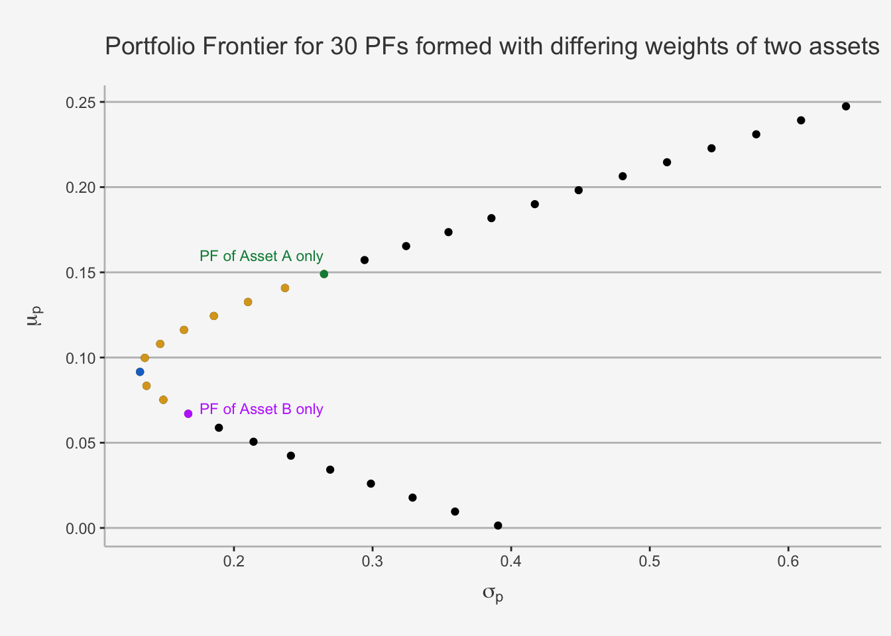
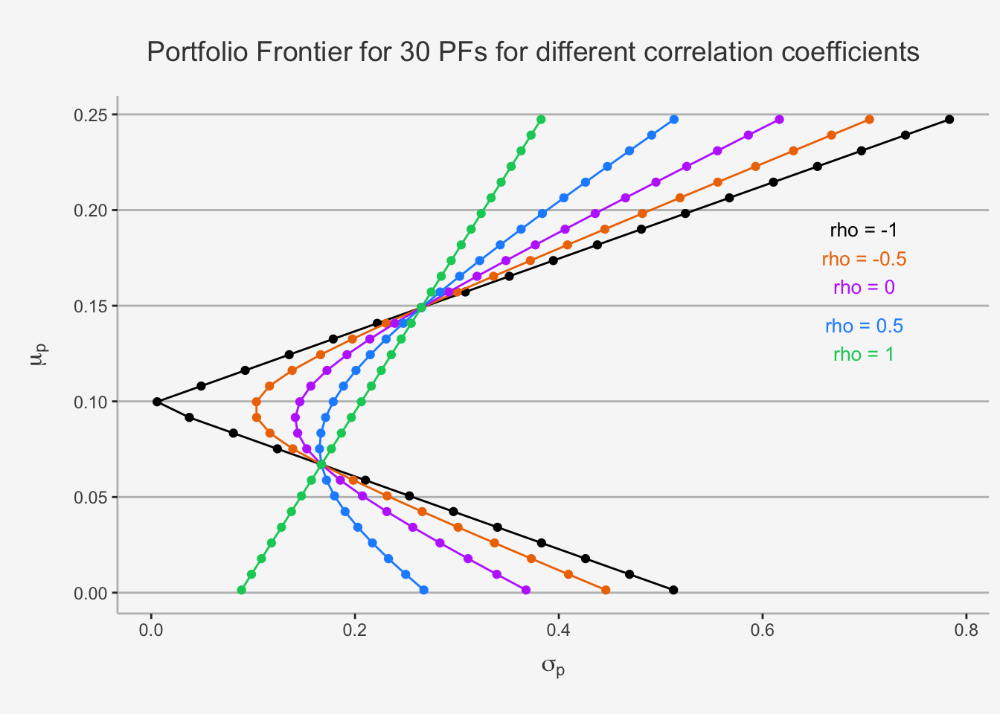
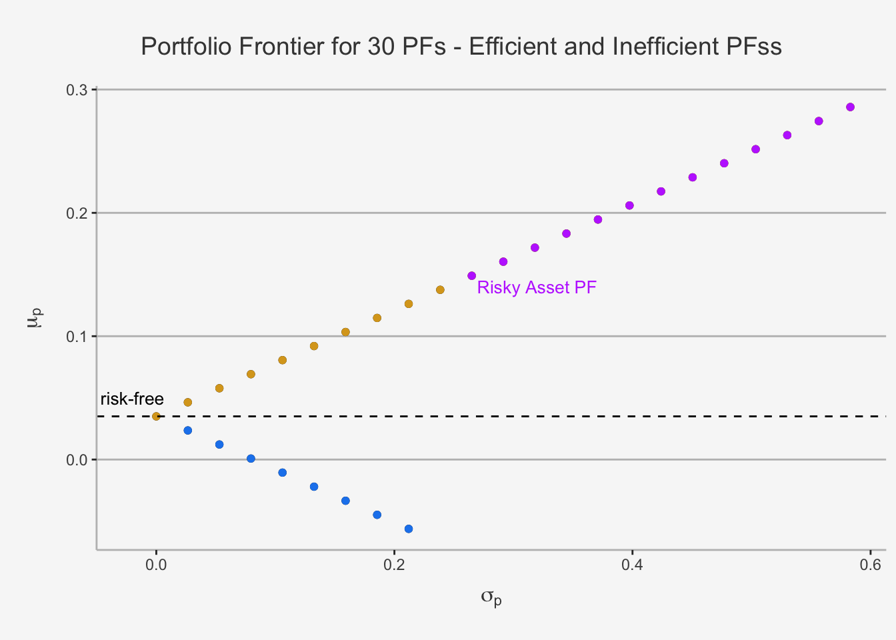
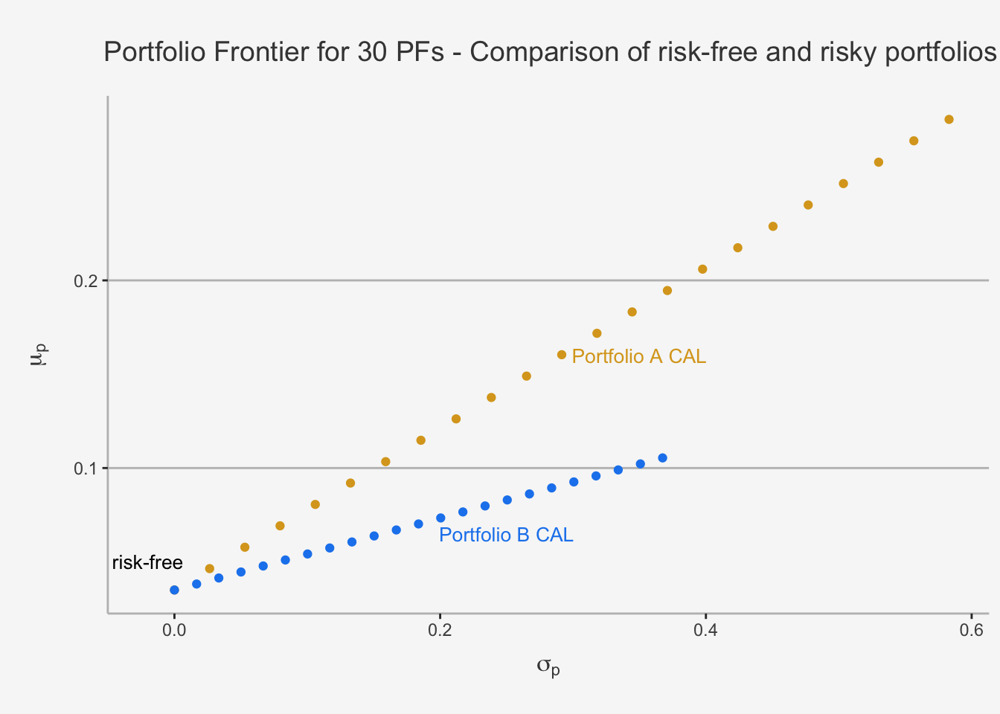
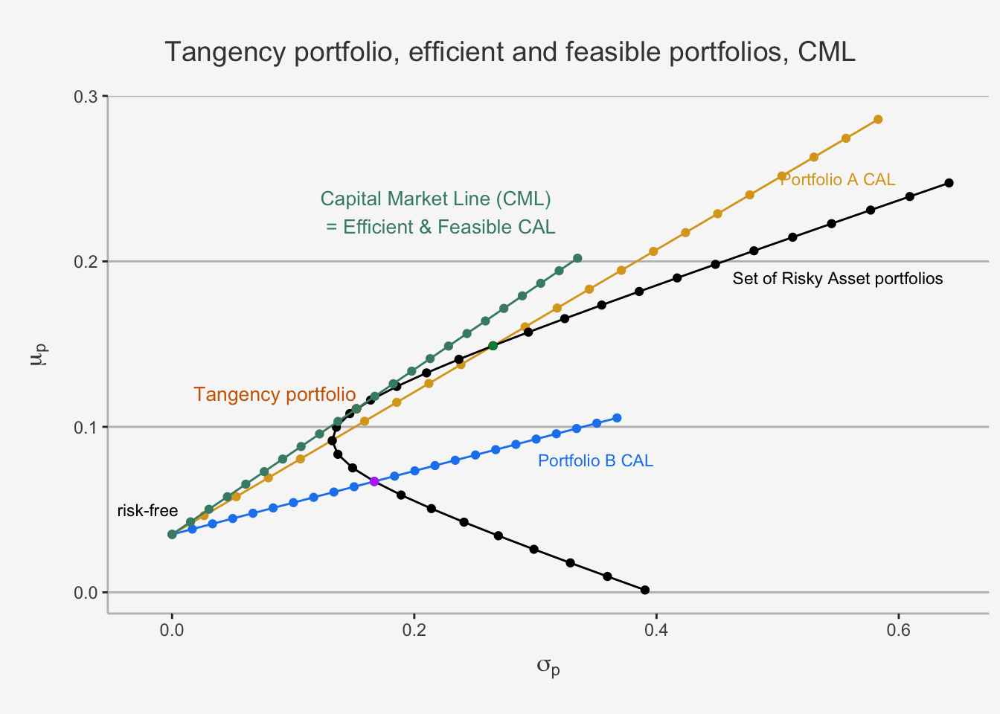
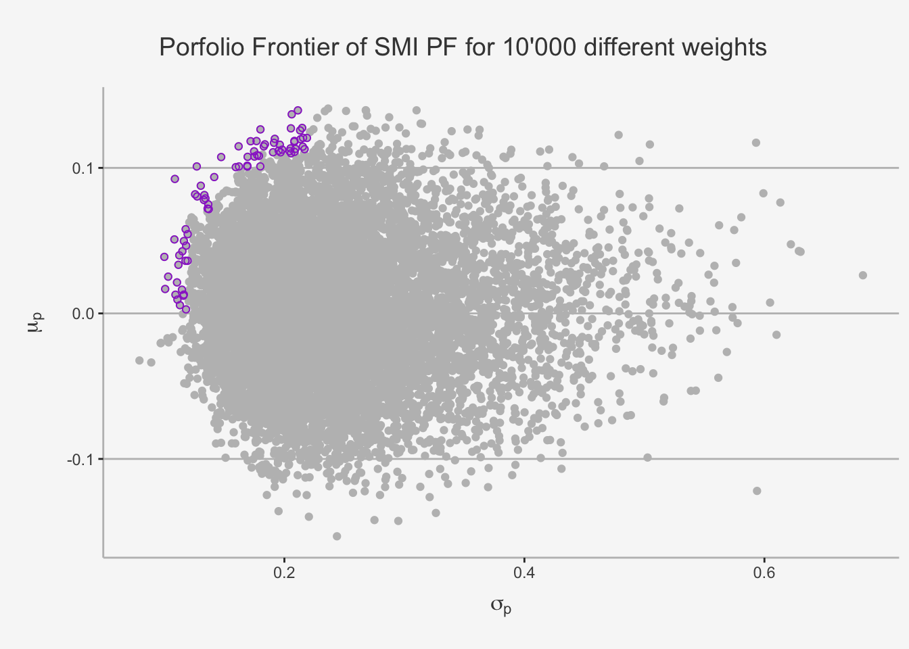
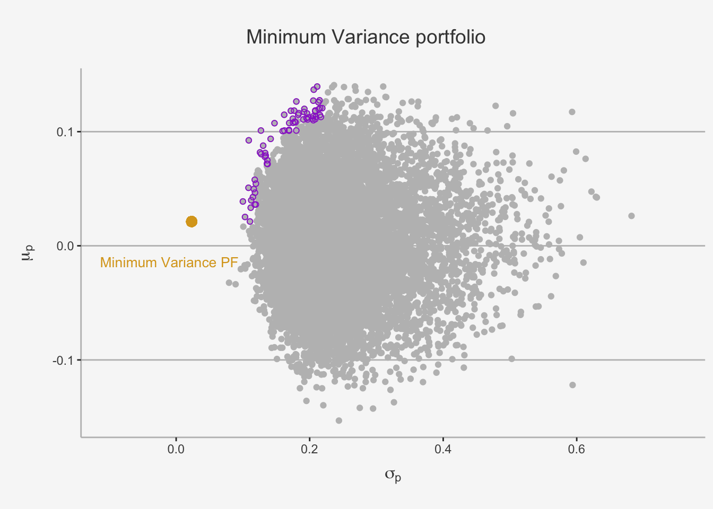
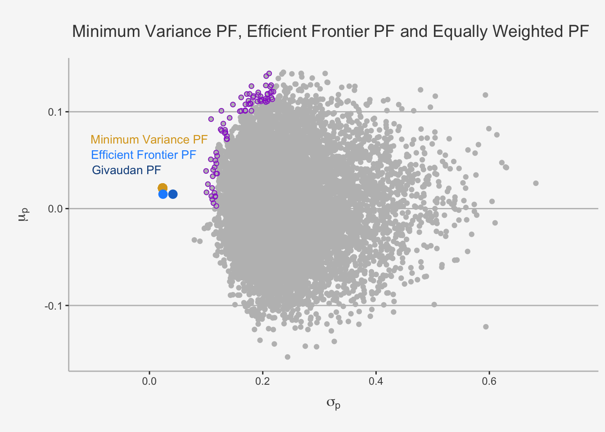

Chapter 5 Portfolio Theory: Mean-Variance Optimisation and the CAPM
In the previous chapters we focused on the introduction of risk and return properties for individual assets as well as portfolios. Further, we introduced the concept of co-dependence both between individual assets as well between an asset and its underlying market structure. Therein, we derived important notions on the statistical requirements to draw causal conclusions. Within these chapters, we focused exclusively on the relationship between risk and return. Naturally, one definition we made was that risk must be compensated for with an appropriate rate of return. Noted as risk parity hypothesis, we created measures that put both factors into relation to each other and compared these ratios throughout a number of asset classes. In this chapter, we now take the underlying model on asset returns, the ideas on risk and return characteristics of portfolios as well as the statistical properties introduced and combine them to form the basis of fempirical portfolio analysis frameworks. Specifically, we present the well-known Mean-Variance portfolio analysis concept for optimal asset allocations, first presented by Henry Markowitz (1959). This theory serves as fundament for most modern asset management classes. The framework uses concepts and assumptions we introduced in previous chapters. As such, it is assumed that the asset returns are normally distributed and investor preferences solely depend on risk and return characteristics. According to the risk parity hypothesis, additional risk must be compensated for by higher returns. Consequently, investors are favorable towards portfolios with high returns and unfavorable towards such with higher variances. As risk and return appear to be positively correlated, investors face a trade-off of these metrics between individual portfolios. Markowitz proposes a framework which quantifies this mean-variance trade off and creates a method to define the optimal portfolio choice.
Henceforth, in this chapter we provide the theoretical foundations as well as the practical application to the Markowitz portfolio optimisation framework. Therein, we first cover the case of two risky and one risk-free asset. We will use this setting to facilitate the main notions as well as replicate the major results and implications of Markowitz’s ideas, both graphically as well with forms of matrix algebra. Later on, we will generalise the simple model into a setting with multiple risky assets. Building on this, we introduce the concept of short sales contracts and, eventually, give rise to the notion of portfolio risk budgeting.
5.1 Markowitz Portfolio Theory with two Risky Assets
5.1.1 The case of portfolios
In chapter two, we already discussed the concept of risk and return. Therein, we defined what a portfolio return is, how we can calculate different forms of returns, what co-dependence properties are and how we can quantify them in order to calculate the appropriate amount of risk for a portfolio. These definitions led us to the concept of portfolio risk and return relationships, where we defined the following:
\[ \begin{align*} \mu_P = E[R_P] &= x_AR_A + x_BR_B \\ \sigma_P^2 &= x_A^2\sigma_A^2 + x_B^2\sigma_B^2 + 2x_Ax_B\sigma_{AB}\\ \sigma_{AB} &= \rho_{AB}\sigma_A\sigma_B \\ x_A + x_B &= 1 \\ R_P &\sim N(\mu_P, \sigma_P^2) \end{align*} \]
where we derived each concept in the previous chapters. Regarding the co-dependence property, we stated that a non perfectly correlated portfolio will reduce overall portfolio risk, due to the concept of diversification. Thus finding assets with non-perfectly positively correlated returns can be beneficial when forming portfolios because risk, as measured by portfolio standard deviation, can be reduced. We also derived this property in the linear algebra introduction. This concepts proves that a risk reduction effect is evident in long-only, two and multiple asset cases when forming portfolios, with the exact amount of reduction quantified by the correlation coefficient, \(\rho_{AB}\).
5.1.2 The set of attainable portfolios
Looking at portfolios, we also introduced the concept of weights. We stated that, in order to create portfolios, we need to define which assets receive which weights and how this weight distribution, or allocation, can influence both risk and return characteristics. Naturally, putting more weight on assets with higher volatility and higher returns will increase both the expected return as well as the risk of a portfolio. Throughout, we specified two weighting concepts: Equally-Weighted as well as Value-Weighted portfolios, whereas the former uses a 1/N weighting ratio, while the latter uses the inverse of the market capitalisation ratio to define weights of individual assets.
However, in theory, we could use any weighting scheme we want in order to form portfolio, as long as the sum of all weights add up to one. This brings us to the next theory. The set of all attainable, or feasible, portfolios is defined as all portfolios that can be created by changing the portfolio weights of the individual assets, as long as their sum adds up to one.
This theorem creates the well-known, parabola shaped relationship of risk and return for a portfolio when varying the weights of its components. Without going too deep into the mathematics, let’s visualize this relationship for the case of a portfolio consisting of two assets.
# First define some return and risk characteristics
mu_A = 0.149
sigma_A = 0.265
mu_B = 0.067
sigma_B = 0.167
rho_AB = -0.135
sigma_AB = sigma_B*sigma_A*rho_AB
# Then, we also define a sequence of 30 portfolio weights for A and B
x_A = seq(from=-0.8, to=2.2, by=0.1)
x_B = 1 - x_A
# Create the expected return as well as the variance and standard deviation of each portfolios
mu_AB = x_A*mu_A + x_B*mu_B
var_AB = x_A^2*sigma_A^2 + x_B^2*sigma_B^2 + 2*x_A*x_B*sigma_AB
sd_AB = sqrt(var_AB)
# Create a data frame for the relationship
risk_return_df <- as.data.frame(cbind(mu_AB, sd_AB, x_A, x_B))
colnames(risk_return_df) <- c("Portfolio_Return", "Portfolio_Risk", "Weight_A", "Weight_B")
# Now, let's visualise the relationship
risk_return_df %>%
ggplot(aes(x= Portfolio_Risk, y = Portfolio_Return)) +
geom_point() +
geom_point(data = subset(risk_return_df, Weight_A >= 0 & Weight_B >= 0), color = "goldenrod", aes(x= Portfolio_Risk, y = Portfolio_Return)) +
geom_point(data = subset(risk_return_df, Portfolio_Risk == min(Portfolio_Risk)), color = "dodgerblue3", aes(x= Portfolio_Risk, y = Portfolio_Return)) +
geom_point(data = subset(risk_return_df, Weight_A == 1), color = "springgreen4", aes(x= Portfolio_Risk, y = Portfolio_Return)) +
geom_point(data = subset(risk_return_df, Weight_B == 1), color = "darkorchid1", aes(x= Portfolio_Risk, y = Portfolio_Return)) +
annotate('text',x = 0.22 ,y = 0.16, label = paste('PF of Asset A only'), size = 3, color = "springgreen4") +
annotate('text',x = 0.22 ,y = 0.07, label = paste('PF of Asset B only'), size = 3, color = "darkorchid1") +
ylab(expression(mu[p])) + xlab(expression(sigma[p])) + ggtitle("Portfolio Frontier for 30 PFs formed with differing weights of two assets") +
labs(color='Factor Portfolios') +
theme(plot.title= element_text(size=14, color="grey26",
hjust=0.3,lineheight=2.4, margin=margin(15,0,15,0)),
panel.background = element_rect(fill="#f7f7f7"),
panel.grid.major.y = element_line(size = 0.5, linetype = "solid", color = "grey"),
panel.grid.minor = element_blank(),
panel.grid.major.x = element_blank(),
plot.background = element_rect(fill="#f7f7f7", color = "#f7f7f7"),
axis.title.y = element_text(color="grey26", size=12, margin=margin(0,10,0,10)),
axis.title.x = element_text(color="grey26", size=12, margin=margin(10,0,10,0)),
axis.line = element_line(color = "grey")) 
This plot is referred to as Markowitz Bullet. The black dots represent 30 distinct risk and return combinations, created by varying the individual constituent weights. The golden, purple, green and blue dots represent long-only portfolios. The black dots represent long-short strategies of two assets. Further, the purple and the green dot represent portfolios consisting of only the Asset B and A, respectively. Moreover, the blue dot represents the global minimum variance portfolio, a notion which we will cover in more detail later.
This shape is vital for the portfolio management theory as it displays the concept of diversification quite clearly. The idea that we just visualised behind the diversification potential can be understood as follows. Suppose we first have an investment in Asset B only. We can diversify and improve our portfolio metrics by rebalancing the portfolio such that we now include some of Asset A. This is indicated by th golden dots. As we can see, diversification increases the expected return while simultaneously decreasing the risk associated. Consequently, these portfolios are superior to the B only case. This is achieved until we reach the blue dot, which displays the minimum variance of a portfolio. This is also known as minimum-variance portfolio. Following this portfolio, we see that both risk and return increase monotonically. Consequently, the “optimal” portfolio in these cases depend on the investor preferences. We then follow a long-only strategy until we reach the green dot, which only consists of portfolio A. Afterwards, we follow with a long-A and short-B strategy.
5.1.3 The Minimum-Variance Portfolio
The Minimum-Variance (MV) Portfolio is a key concept in Markowitz’s Portfolio optimisation. It is used to give you an intuition on how to form weights on the portfolio frontier. It can be derived using a constrained optimisation problem.
We make a small exercise in calculus, using the substitution method, to derive the weight of the MV portfolio. As a side note, you can also use the Lagrangian method to determine the weights.
To get the MV portfolio, we use the minimisation of the portfolio variance, subject to the fact that both weights must add up to 1.
\[ \begin{align} \min_{x_A, x_B} \sigma_P^2 &= x_A\sigma_A^2 + x_B\sigma_B^2 + 2x_Ax_B\sigma_{AB} \\ \text{s.t. } x_a + x_B &= 1 \end{align} \] Let’s start with the optimisation. If we substitute \(x_B = 1 - x_A\), we obtain
\[ \begin{align} \min_{x_A} \sigma_P^2 &= x_A\sigma_A^2 + x_B\sigma_B^2 + 2x_Ax_B\sigma_{AB} \\ &= x_A^2\sigma_A^2 +(1-x_A)^2\sigma_B^2 + 2x_A(1-x_A)\sigma_{AB} && x_B = 1-x_A \\ \frac{d\sigma_P^2}{dx_A} = 0 &= 2x_A\sigma_A^2 - 2(1-x_A)\sigma_B^2 + 2\sigma_{AB} -4x_A\sigma_{AB} \\ &= 2x_A\sigma_A^2 - 2(1-x_A)\sigma_B^2 + 2\sigma_{AB}(1-x_A) \end{align} \]
If we now solve for \(x_A\), we obtain the optimal weight of Asset A and Asset B for the MV portfolio as:
\[ \begin{align} x_A &= \frac{\sigma_B^2 - \sigma_{AB}}{\sigma_A^2 + \sigma_B^2 - 2\sigma_{AB}}\\ x_B &= 1 - x_A \end{align} \]
In the case of our assets, let’s quickly calculate the respective weights:
x_A_MV = (sigma_B^2 - sigma_AB)/(sigma_A^2 + sigma_B^2 - 2*sigma_AB)
x_B_MV = 1 - x_A_MV
mu_MV = mu_A*x_A_MV + mu_B*x_B_MV
sd_MV = sqrt(sigma_A^2*x_A_MV^2 + sigma_B^2*x_B_MV^2 + 2*x_A_MV*x_B_MV*sigma_AB)
MV_df <- as.data.frame(cbind(x_A_MV, x_B_MV, mu_MV, sd_MV))
colnames(MV_df) <- c("Weight Asset A", "Weight Asset B", "Expected Return", "Volatility (StD)")
MV_df## Weight Asset A Weight Asset B Expected Return Volatility (StD)
## 1 0.3076735 0.6923265 0.09222923 0.13217465.1.4 The role of correlation on the frontier of portfolios
As we said, the portfolio frontier shows the correlation properties between assets and can therein display the diversification potential. As such, it is interesting to see how the portfolio changes with varying correlations. In order to show this, we need to slightly adjust the formula for the variance such that we are able to write the formula in terms of the correlation coefficient, \(\rho_{AB}\).
# Let's define the variance as follows:
# First define some return and risk characteristics
mu_A = 0.149
sigma_A = 0.265
mu_B = 0.067
sigma_B = 0.167
# Then, we also define a sequence of 30 portfolio weights for A and B
x_A = seq(from=-0.8, to=2.2, by=0.1)
x_B = 1 - x_A
# Calculate the mean return (the same for all as it does not depend on the rho's)
mu_AB = x_A*mu_A + x_B*mu_B
# Define a list with rho's
rho <- c(-1, -0.5, 0, 0.5, 1)
# Create the different standard deviations
for (i in rho){
cov_AB = sigma_B*sigma_A*i
var_AB = x_A^2*sigma_A^2 + x_B^2*sigma_B^2 + 2*x_A*x_B*cov_AB
sd_AB = sqrt(var_AB)
if (i == -1){
sd_AB_final <- sd_AB
}
else {
sd_AB_final <- cbind(sd_AB_final, sd_AB)
}
}
sd_AB_final_df <- as.data.frame(cbind(mu_AB, sd_AB_final))
colnames(sd_AB_final_df) <- c("Return", "rho_1_neg", "rho_0.5_neg", "rho0", "rho0.5", "rho1")
# Visualise the relationship
sd_AB_final_df %>%
ggplot(aes(x= rho_1_neg, y = Return)) +
geom_point() +
geom_path() +
geom_point(color = "darkorange2", aes(x= rho_0.5_neg, y = Return)) +
geom_path(color = "darkorange2", aes(x= rho_0.5_neg, y = Return)) +
geom_point(color = "darkorchid1", aes(x= rho0, y = Return)) +
geom_path(color = "darkorchid1", aes(x= rho0, y = Return)) +
geom_point(color = "dodgerblue1", aes(x= rho0.5, y = Return)) +
geom_path(color = "dodgerblue1", aes(x= rho0.5, y = Return)) +
geom_point(color = "springgreen3", aes(x= rho1, y = Return)) +
geom_path(color = "springgreen3", aes(x= rho1, y = Return)) +
annotate('text',x = 0.70 ,y = 0.19, label = paste('rho = -1'), size = 3.5) +
annotate('text',x = 0.70 ,y = 0.175, label = paste('rho = -0.5'), size = 3.5, color = "darkorange2") +
annotate('text',x = 0.70 ,y = 0.16, label = paste('rho = 0'), size = 3.5, color = "darkorchid1") +
annotate('text',x = 0.70 ,y = 0.14, label = paste('rho = 0.5'), size = 3.5, color = "dodgerblue1") +
annotate('text',x = 0.70 ,y = 0.125, label = paste('rho = 1'), size = 3.5, color = "springgreen3") +
ylab(expression(mu[p])) + xlab(expression(sigma[p])) + ggtitle("Portfolio Frontier for 30 PFs for different correlation coefficients") +
labs(color='Factor Portfolios') +
theme(plot.title= element_text(size=14, color="grey26",
hjust=0.3,lineheight=2.4, margin=margin(15,0,15,0)),
panel.background = element_rect(fill="#f7f7f7"),
panel.grid.major.y = element_line(size = 0.5, linetype = "solid", color = "grey"),
panel.grid.minor = element_blank(),
panel.grid.major.x = element_blank(),
plot.background = element_rect(fill="#f7f7f7", color = "#f7f7f7"),
axis.title.y = element_text(color="grey26", size=12, margin=margin(0,10,0,10)),
axis.title.x = element_text(color="grey26", size=12, margin=margin(10,0,10,0)),
axis.line = element_line(color = "grey")) 
5.1.5 Efficient Portfolios with two risky assets
As we have seen, the bullet shape of each portfolio combination splits the portfolio set horizontally into two regions, based on their respective risk and return relation. To be precise, we can observe that, for a quasi identical level of risk we can attain two vastly different levels of expected portfolio return. Based on this observation, we can sort the portfolio into two regions: Efficient and Inefficient portfolios.
Efficient Portfolios are the set of all attainable portfolios that have the highest return for any given level of risk (measured by its standard deviation). Graphically, these are all the portfolios that are at or above the MV portfolio.
Inefficient Portfolios are the set of all attainable portfolios that do not have the highest return for any given level of risk (measured by its standard deviation). Graphically, these are all the portfolios that are at or below the MV portfolio.
We can visually depict this as follows:
# First define some return and risk characteristics
mu_A = 0.149
sigma_A = 0.265
mu_B = 0.067
sigma_B = 0.167
rho_AB = -0.135
sigma_AB = sigma_B*sigma_A*rho_AB
# Then, we also define a sequence of 30 portfolio weights for A and B
x_A = seq(from=-0.8, to=2.2, by=0.1)
x_B = 1 - x_A
# Create the expected return as well as the variance and standard deviation of each portfolios
mu_AB = x_A*mu_A + x_B*mu_B
var_AB = x_A^2*sigma_A^2 + x_B^2*sigma_B^2 + 2*x_A*x_B*sigma_AB
sd_AB = sqrt(var_AB)
# Create a data frame for the relationship
risk_return_df <- as.data.frame(cbind(mu_AB, sd_AB, x_A, x_B))
colnames(risk_return_df) <- c("Portfolio_Return", "Portfolio_Risk", "Weight_A", "Weight_B")
# Now, let's visualise the relationship
risk_return_df %>%
ggplot(aes(x= Portfolio_Risk, y = Portfolio_Return)) +
geom_point() +
geom_point(data = subset(risk_return_df, Portfolio_Return >= 0.0916), color = "goldenrod", aes(x= Portfolio_Risk, y = Portfolio_Return)) +
geom_point(data = subset(risk_return_df, Portfolio_Return < 0.0916), color = "dodgerblue2", aes(x= Portfolio_Risk, y = Portfolio_Return)) +
ylab(expression(mu[p])) + xlab(expression(sigma[p])) + ggtitle("Portfolio Frontier for 30 PFs - Efficient and Inefficient PFs") +
geom_vline(xintercept = 0.385, linetype = "dashed") +
annotate('text',x = 0.42 ,y = 0.17, label = paste('Efficient PF'), size = 3.5, color = "goldenrod") +
annotate('text',x = 0.424 ,y = 0.02, label = paste('Inefficient PF'), size = 3.5, color = "dodgerblue2") +
labs(color='Factor Portfolios') +
theme(plot.title= element_text(size=14, color="grey26",
hjust=0.3,lineheight=2.4, margin=margin(15,0,15,0)),
panel.background = element_rect(fill="#f7f7f7"),
panel.grid.major.y = element_line(size = 0.5, linetype = "solid", color = "grey"),
panel.grid.minor = element_blank(),
panel.grid.major.x = element_blank(),
plot.background = element_rect(fill="#f7f7f7", color = "#f7f7f7"),
axis.title.y = element_text(color="grey26", size=12, margin=margin(0,10,0,10)),
axis.title.x = element_text(color="grey26", size=12, margin=margin(10,0,10,0)),
axis.line = element_line(color = "grey")) 
5.2 Markowitz Portfolio Theory with a Risky and a Risk-Free Asset
In the previous chapters we also introduced the concept of a risk-free asset. In essence, risk-free assets are such assets that always have the same pay-off, irrespective of the state of the world. Thus, their volatility structure is constant. As a consequence, they have a quasi-zero variance and standard deviation. Prominent examples of risk-free assets are the Swiss 1 Year Government Bond with which we have worked throughout the class or the US T-Bills.
These notions imply the following properties of risk free assets, \(r_f\):
\[ \begin{align} E[r_f] &= r_f \\ \sigma_f^2 &= 0 \\ cov(r_A, r_f) &= 0 \end{align} \]
If we introduce the risk-free asset, into the portfolio theory, our portfolio return becomes:
\[ R_P = x_fr_f + x_Ar_A = (1-x_A)r_f + x_Ar_A = r_f + x_A(r_A - r_f) \]
whereas \(x_A(r_A - r_f)\) is the weighted excess return of the risky asset over the risk-free asset. Consistent with the risk parity hypothesis, we expect this excess return to be positive, as rational investors expect a higher return when incorporating riskier assets to compensate for said increase in risk.
In said case, we can calculate both the portfolio expected return as well as the variance as:
\[ \begin{align} \mu_P &= r_f + x_A(\mu_A - r_f) \\ \sigma_P &= x_A\sigma_A \end{align} \] In case of a risky and a risk-free asset, we can draw the portfolio frontier in a similar fashion to the frontier assuming that we have two perfectly negatively correlated assets:
# First define some return and risk characteristics
mu_A = 0.149
sigma_A = 0.265
mu_f = 0.035
sigma_f = 0
rho_Af = 0
sigma_Af = 0
# Then, we also define a sequence of 30 portfolio weights for A and B
x_A = seq(from=-0.8, to=2.2, by=0.1)
x_f = 1 - x_A
# Create the expected return as well as the variance and standard deviation of each portfolios
mu_Af = x_A*mu_A + x_f*mu_f
var_Af = x_A^2*sigma_A^2 + x_f^2*sigma_f^2 + 2*x_A*x_f*sigma_Af
sd_Af = sqrt(var_Af)
# Create a data frame for the relationship
risk_return_df_rf <- as.data.frame(cbind(mu_Af, sd_Af, x_A, x_f))
colnames(risk_return_df_rf) <- c("Portfolio_Return", "Portfolio_Risk", "Weight_A", "Weight_B")
# Now, let's visualise the relationship
risk_return_df_rf %>%
ggplot(aes(x= Portfolio_Risk, y = Portfolio_Return)) +
geom_point() +
geom_point(data = subset(risk_return_df_rf, Portfolio_Return >= 0.0350), color = "goldenrod", aes(x= Portfolio_Risk, y = Portfolio_Return)) +
geom_point(data = subset(risk_return_df_rf, Portfolio_Return < 0.0350), color = "dodgerblue2", aes(x= Portfolio_Risk, y = Portfolio_Return)) +
geom_point(data = subset(risk_return_df_rf, Weight_A >= 1), color = "darkorchid1", aes(x= Portfolio_Risk, y = Portfolio_Return)) +
annotate('text',x = -0.02 ,y = 0.05, label = "risk-free", size = 3.5, color = "black") +
annotate('text', x = 0.32 ,y = 0.14, label = paste('Risky Asset PF'), size = 3.5, color = "darkorchid1") +
ylab(expression(mu[p])) + xlab(expression(sigma[p])) + ggtitle("Portfolio Frontier for 30 PFs - Efficient and Inefficient PFss") +
geom_hline(yintercept = 0.0350, linetype = "dashed") +
labs(color='Factor Portfolios') +
theme(plot.title= element_text(size=14, color="grey26",
hjust=0.3,lineheight=2.4, margin=margin(15,0,15,0)),
panel.background = element_rect(fill="#f7f7f7"),
panel.grid.major.y = element_line(size = 0.5, linetype = "solid", color = "grey"),
panel.grid.minor = element_blank(),
panel.grid.major.x = element_blank(),
plot.background = element_rect(fill="#f7f7f7", color = "#f7f7f7"),
axis.title.y = element_text(color="grey26", size=12, margin=margin(0,10,0,10)),
axis.title.x = element_text(color="grey26", size=12, margin=margin(10,0,10,0)),
axis.line = element_line(color = "grey")) 
5.2.1 The Capital Allocation Line (CAL)
As we can see, we again obtain two straight lines, consisting of inefficient and efficient portfolios.
Under the assumption that \(x > 0\) (no short sales) we can use the variance equation and solve for x:
\[ x_A = \frac{\sigma_P} {\sigma_A} \]
This implies that the optimal weight of the risky asset is given by the variance of the asset relative to the variance of the portfolio. As such, the return of the risky asset is weighted by the inverse of the asset risk relative to the overall portfolio risk. If we now substitute this result into the expected return, we obtain:
\[ \mu_P = r_f + \frac{\mu_A - r_f}{\sigma_A}\cdot \sigma_P \]
This variable is called the Capital Allocation Line (CAL). This is exactly the line that consists of the dots we just displayed. It describes how the investment is allocated between the risk-free asset and the risky asset. For dots in close proximity to the risk-free asset, we understand that most of the capital is allocated in riskless assets (consequently, the return is close to the risk-free). The further we deviate from the risk-free asset, the more we allocate into the risky assets, with the (theoretical) maximum of a portfolio consisting only of the risky asset. The purple dots represent long-short portfolios where the risk-free asset is shorted to invest in additional quantities of the risky asset.
The slope of the CAL is familiar to us. If we take the derivative w.r.t \(\sigma_P\), we obtain:
\[ \frac{d\mu_P}{d\sigma_P} = \frac{\mu_A - r_f}{\sigma_A} \]
Note from the previous chapters that it puts an excess return in relation to the risk. This is also known as Sharpe Ratio, which measures the risk premium per additional unit of risk. The Sharpe ratio ultimately quantifies the efficiency of different risky and risk-free portfolio combinations. In essence, we understand that the portfolio with the higher Sharpe Ratio is more efficient than the portfolio with the lower ratio. Consequently, these portfolio variations according to weight assignments will induce a steeper slope. This is the reason for the appeal of the Sharpe Ratio in investment assessments.
# First define some return and risk characteristics
mu_A = 0.149
sigma_A = 0.265
mu_B = 0.074
mu_B = 0.067
sigma_B = 0.167
mu_f = 0.035
sigma_f = 0
rho_Af = 0
sigma_Af = 0
rho_Bf = 0
sigma_Bf = 0
# Then, we also define a sequence of 30 portfolio weights for A and B
x_A = seq(from=-0.8, to=2.2, by=0.1)
x_f = 1 - x_A
# Create the expected return as well as the variance and standard deviation of each portfolios
mu_Af = x_A*mu_A + x_f*mu_f
var_Af = x_A^2*sigma_A^2 + x_f^2*sigma_f^2 + 2*x_A*x_f*sigma_Af
sd_Af = sqrt(var_Af)
# Do the same for PF B
x_B = seq(from=-0.8, to=2.2, by=0.1)
x_f = 1 - x_B
mu_Bf = x_B*mu_B + x_f*mu_f
var_Bf = x_B^2*sigma_B^2 + x_f^2*sigma_f^2 + 2*x_B*x_f*sigma_Bf
sd_Bf = sqrt(var_Bf)
# Create a data frame for the relationship
risk_return_df_rf <- as.data.frame(cbind(mu_Af, sd_Af, mu_Bf, sd_Bf, x_A, x_f))
colnames(risk_return_df_rf) <- c("Portfolio_Return_A", "Portfolio_Risk_A", "Portfolio_Return_B", "Portfolio_Risk_B", "Weight_A", "Weight_B")
# Subset with only efficient PFs
risk_return_df_rf_sub <- subset(risk_return_df_rf, Weight_A >= 0)
# Now, let's visualise the relationship
risk_return_df_rf_sub %>%
ggplot(aes(x= Portfolio_Risk_A, y = Portfolio_Return_A)) +
geom_point(color = "goldenrod",) +
geom_point(color = "dodgerblue2", aes(x= Portfolio_Risk_B, y = Portfolio_Return_B)) +
annotate('text',x = 0.35 ,y = 0.16, label = "Portfolio A CAL", size = 3.5, color = "goldenrod") +
annotate('text',x = 0.25 ,y = 0.065, label = "Portfolio B CAL", size = 3.5, color = "dodgerblue2") +
annotate('text',x = -0.02 ,y = 0.05, label = "risk-free", size = 3.5, color = "black") +
ylab(expression(mu[p])) + xlab(expression(sigma[p])) + ggtitle("Portfolio Frontier for 30 PFs - Comparison of risk-free and risky portfolios") +
labs(color='Factor Portfolios') +
theme(plot.title= element_text(size=14, color="grey26",
hjust=0.3,lineheight=2.4, margin=margin(15,0,15,0)),
panel.background = element_rect(fill="#f7f7f7"),
panel.grid.major.y = element_line(size = 0.5, linetype = "solid", color = "grey"),
panel.grid.minor = element_blank(),
panel.grid.major.x = element_blank(),
plot.background = element_rect(fill="#f7f7f7", color = "#f7f7f7"),
axis.title.y = element_text(color="grey26", size=12, margin=margin(0,10,0,10)),
axis.title.x = element_text(color="grey26", size=12, margin=margin(10,0,10,0)),
axis.line = element_line(color = "grey")) 
As we can see, the Slope of PF A is higher than the slope of PF B. Accordingly, for each unit of risk, we have a superior excess return profile. We can also quantify this by calculating the Sharpe Ratio directly. In our case, this is the following.
## [1] "The Sharpe Ratio of Asset A is 0.43 and the Sharpe Ratio of Asset B is 0.27"5.3 Markowitz Portfolio Theory with two Risky and a Risk-Free Asset
In a next step, we can try to quantify a portfolio consisting of three assets, whereas two are risky and one is risk-free. From earlier results we understand that any linear combination of two portfolios consisting of a risky and the same risk-free asset will also follow a linear slope. Given the two different CALs of portfolio A and B in the previous chapter, it is logical that a weighted average of both returns and risk will quantify the slope of the resulting portfolio. Consequently, the efficient set of portfolios will be a straight line with intercept in \(r_f\). Further, we need to understand whether a linear combination of the assets induces a more efficient portfolio, compared to if we would only invest in one risky asset and the risk-free. As such, we can derive that the three-piece portfolio must have the maximum slope while it still incorporates any linear combination of risky assets. Consequently, we need to solve for a constrained maximisation of the Sharpe Ratio to obtain the optimal, or most efficient, slope and derive the optimal weighting of the individual assets. In order to find this, we need to define the Tangency Portfolio.
5.3.1 Tangency Portfolio
The Tangency Portfolio represents the portfolio in which the CAL of the three-piece portfolio is exactly tangent to the set of differently weighted risky asset only portfolios. In essence, it is the portfolio which is a combination of the two risky and the risk-free assets such that it is in the set of feasible risky assets and maximises the slope of the CAL. It is the portfolio which has the best possible excess return per additional unit of risk. Geometrically speaking, this is the “steepest sloped”, or most efficient, portfolio combination we can attain conditional on the fact that the portfolio must consist of a linear combination of the assets under consideration. As a consequence, portfolios consisting of the risk-free asset as well as the tangency portfolio are the efficient portfolio consisting of risk-free and risky assets.
Let’s visually depict this in more detail below.
# First define some return and risk characteristics
mu_A = 0.149
sigma_A = 0.265
mu_B = 0.074
mu_B = 0.067
sigma_B = 0.167
mu_f = 0.035
sigma_f = 0
rho_Af = 0
sigma_Af = 0
rho_Bf = 0
sigma_Bf = 0
# Then, we also define a sequence of 30 portfolio weights for A and B
x_A = seq(from=-0.8, to=2.2, by=0.1)
x_f = 1 - x_A
# Create the expected return as well as the variance and standard deviation of each portfolios
mu_Af = x_A*mu_A + x_f*mu_f
var_Af = x_A^2*sigma_A^2 + x_f^2*sigma_f^2 + 2*x_A*x_f*sigma_Af
sd_Af = sqrt(var_Af)
# Do the same for PF B
x_B = seq(from=-0.8, to=2.2, by=0.1)
x_f = 1 - x_B
mu_Bf = x_B*mu_B + x_f*mu_f
var_Bf = x_B^2*sigma_B^2 + x_f^2*sigma_f^2 + 2*x_B*x_f*sigma_Bf
sd_Bf = sqrt(var_Bf)
# Create a data frame for the relationship
risk_return_df_rf <- as.data.frame(cbind(mu_Af, sd_Af, mu_Bf, sd_Bf, x_A, x_f))
colnames(risk_return_df_rf) <- c("Portfolio_Return_A", "Portfolio_Risk_A", "Portfolio_Return_B", "Portfolio_Risk_B", "Weight_A", "Weight_B")
# Subset with only efficient PFs
risk_return_df_rf_sub <- subset(risk_return_df_rf, Weight_A >= 0)
# Now, let's visualise the relationship
risk_return_df_rf_sub %>%
ggplot(aes(x= Portfolio_Risk_A, y = Portfolio_Return_A)) +
geom_point(color = "goldenrod") +
geom_point(data = risk_return_df, aes(x = Portfolio_Risk, y = Portfolio_Return)) +
geom_point(color = "dodgerblue2", aes(x= Portfolio_Risk_B, y = Portfolio_Return_B)) +
annotate('text',x = 0.35 ,y = 0.22, label = "Portfolio A CAL", size = 3.5, color = "goldenrod") +
annotate('text',x = 0.35 ,y = 0.08, label = "Portfolio B CAL", size = 3.5, color = "dodgerblue2") +
annotate('text',x = -0.02 ,y = 0.05, label = "risk-free", size = 3.5, color = "black") +
annotate('text',x = 0.55 ,y = 0.19, label = paste('Set of Risky Asset portfolios'), size = 3, color = "black") +
geom_point(data = subset(risk_return_df, Weight_A == 1), color = "springgreen4", aes(x= Portfolio_Risk, y = Portfolio_Return)) +
geom_point(data = subset(risk_return_df, Weight_B == 1), color = "darkorchid1", aes(x= Portfolio_Risk, y = Portfolio_Return)) +
geom_point(data = subset(risk_return_df, Weight_B == 0.7), color = "firebrick3", aes(x= Portfolio_Risk, y = Portfolio_Return)) +
annotate('text',x = 0.22 ,y = 0.16, label = paste('PF of Asset A only'), size = 3, color = "springgreen4") +
annotate('text',x = 0.25 ,y = 0.065, label = paste('PF of Asset B only'), size = 3, color = "darkorchid1") +
annotate('text',x = 0.065 ,y = 0.09, label = paste('PF of Asset A and B'), size = 3, color = "firebrick3") +
ylab(expression(mu[p])) + xlab(expression(sigma[p])) + ggtitle("Efficient portfolios, risky asset portfolios and the CAL") +
labs(color='Factor Portfolios') +
theme(plot.title= element_text(size=14, color="grey26",
hjust=0.3,lineheight=2.4, margin=margin(15,0,15,0)),
panel.background = element_rect(fill="#f7f7f7"),
panel.grid.major.y = element_line(size = 0.5, linetype = "solid", color = "grey"),
panel.grid.minor = element_blank(),
panel.grid.major.x = element_blank(),
plot.background = element_rect(fill="#f7f7f7", color = "#f7f7f7"),
axis.title.y = element_text(color="grey26", size=12, margin=margin(0,10,0,10)),
axis.title.x = element_text(color="grey26", size=12, margin=margin(10,0,10,0)),
axis.line = element_line(color = "grey")) This shows well the constrained optimisation problem. In essence, we need to find a portfolio such that we can have the maximal slope of the CAL of the linear combination of the assets while still be in the set of feasible portfolios, which is defined by the set of risky asset portfolios. Consequently, the resulting portfolio must either cross or be tangent to the weighted risky asset portfolio path. As we can see, this is currently only the case for three weighted portfolios. The first is indicated with a purple dot, displaying the portfolio of only investing in Asset B. The second is the green dot, displaying the portfolio of only investing in Asset A. The third one is the red dot, displaying the portfolio for investing in both Asset A and B (In our case, this is a 30-70 split in Asset A and B, respectively). As we can already see graphically, the red and green portfolio are more efficient than the purple portfolio, and red and green have the same efficiency. We already calculated the individual Sharpe Ratios in the previous chapter.
## [1] "The Sharpe Ratio of Asset A of Asset AB is 0.43 and the Sharpe Ratio of Asset B is 0.27"However, we can further improve the slope of the CAL and thus induce a more efficient portfolio combination by only slightly “touching” the set of feasible risky assets. That is, we can find a slope such that we are tangent to this set. This can be achieved by solving for the tangency portfolio.
Mathematically, we do so by solving a constrained maximisation problem. This problem looks as follows:
\[ \begin{align} \max_{x_A, x_B} \frac{\mu_P - r_f}{\sigma_P} s.t. \\ \mu_P &= x_A\mu_A + x_B\mu_B \\ \sigma_P &= \sqrt{x_A^2\sigma_A^2 + x_B^2\sigma_B^2 + 2x_Ax_B\sigma_{AB}}\\ x_A + x_B &= 1 \end{align} \]
As we already did in the risky assets only case, we can now perform substitution of \(x_B = 1 - x_A\) and insert the conditions into the maximisation problem and then solve w.r.t \(x_A\). Without going into the derivation based on straight-forward calculus methods, when performing all these steps we obtain:
\[ \begin{align} x_A^{t} &= \frac{(\mu_A - r_f)\sigma_B^2 - (\mu_B - r_f)\sigma_{AB}}{(\mu_A - r_f)\sigma_B^2 + (\mu_B - r_f)\sigma_A^2 - (\mu_A + \mu_B - 2r_f)\sigma_{AB}} \\ x_B^{t} &= 1 - x_A^{t} \end{align} \]
With this formula, we obtain the optimal weights for both the risky assets such that we have a three-piece portfolio with the steepest efficient and attainable slope that maximises the excess return per additional unit of risk.
Let’s quickly calculate this.
# Calculate the tangency portfolio weights
x_t_A = ((mu_A - mu_f)*sigma_B^2 - (mu_B - mu_f)*sigma_AB) / ((mu_A - mu_f)*sigma_B^2 + (mu_B - mu_f)*sigma_A^2 - (mu_A + mu_B - 2*mu_f)*sigma_AB)
x_t_B = 1 - x_t_A
# Calculate the mean return and standard deviation
mu_t_AB <- x_t_A*mu_A + x_t_B*mu_B
sigma_t_AB <- sqrt(x_t_A^2*sigma_A^2 + x_t_B^2*sigma_B^2 + 2*x_t_A*x_t_B*sigma_AB)
# Calculate the Sharpe Ratio
SR_t_AB <- (mu_t_AB - mu_f) / sigma_t_AB
# Create a data frame for all three combinations
df_t_AB <- as.data.frame(cbind(x_t_A, x_t_B, mu_t_AB, sigma_t_AB, SR_t_AB))
colnames(df_t_AB) <- c("Weight A", "Weight B", "Expected Return", "Standard Deviation", "Sharpe Ratio")
df_A <- as.data.frame(cbind(1, 0, mu_A, sigma_A, SR_A))
colnames(df_A) <- c("Weight A", "Weight B", "Expected Return", "Standard Deviation", "Sharpe Ratio")
df_B <- as.data.frame(cbind(0, 1, mu_B, sigma_B, SR_B))
colnames(df_B) <- c("Weight A", "Weight B", "Expected Return", "Standard Deviation", "Sharpe Ratio")
# Combine the frame
df_total <- as.data.frame(rbind(round(df_t_AB,3), round(df_A,3), round(df_B, 3)))
rownames(df_total) <- c("Tangency PF", "PF A", "PF B")
# Show the results
df_total## Weight A Weight B Expected Return Standard Deviation Sharpe Ratio
## Tangency PF 0.535 0.465 0.111 0.152 0.499
## PF A 1.000 0.000 0.149 0.265 0.430
## PF B 0.000 1.000 0.067 0.167 0.192As we can see, a portfolio consisting of 53.5 % of Asset A and 46.5% of Asset B induces the highest Sharpe Ratio and thus has the steepest CAL slope. Consequently, this portfolio is feasible and efficient, as we can visualise below:
# First define some return and risk characteristics
mu_A = 0.149
sigma_A = 0.265
mu_B = 0.074
mu_B = 0.067
sigma_B = 0.167
mu_f = 0.035
sigma_f = 0
rho_Af = 0
sigma_Af = 0
rho_Bf = 0
sigma_Bf = 0
# Then, we also define a sequence of 30 portfolio weights for A and B
x_A = seq(from=-0.8, to=2.2, by=0.1)
x_f = 1 - x_A
# Create the expected return as well as the variance and standard deviation of each portfolios
mu_Af = x_A*mu_A + x_f*mu_f
var_Af = x_A^2*sigma_A^2 + x_f^2*sigma_f^2 + 2*x_A*x_f*sigma_Af
sd_Af = sqrt(var_Af)
# Do the same for PF B
x_B = seq(from=-0.8, to=2.2, by=0.1)
x_f = 1 - x_B
mu_Bf = x_B*mu_B + x_f*mu_f
var_Bf = x_B^2*sigma_B^2 + x_f^2*sigma_f^2 + 2*x_B*x_f*sigma_Bf
sd_Bf = sqrt(var_Bf)
# Create a data frame for the relationship
risk_return_df_rf <- as.data.frame(cbind(mu_Af, sd_Af, mu_Bf, sd_Bf, x_A, x_f))
colnames(risk_return_df_rf) <- c("Portfolio_Return_A", "Portfolio_Risk_A", "Portfolio_Return_B", "Portfolio_Risk_B", "Weight_A", "Weight_B")
# Subset with only efficient PFs
risk_return_df_rf_sub <- subset(risk_return_df_rf, Weight_A >= 0)
# Now, let's visualise the relationship
risk_return_df_rf_sub %>%
ggplot(aes(x= Portfolio_Risk_A, y = Portfolio_Return_A)) +
geom_point(color = "goldenrod") +
geom_point(data = risk_return_df, aes(x = Portfolio_Risk, y = Portfolio_Return)) +
geom_point(color = "dodgerblue2", aes(x= Portfolio_Risk_B, y = Portfolio_Return_B)) +
annotate('text',x = 0.55 ,y = 0.25, label = "Portfolio A CAL", size = 3, color = "goldenrod") +
annotate('text',x = 0.35 ,y = 0.08, label = "Portfolio B CAL", size = 3, color = "dodgerblue2") +
annotate('text',x = -0.02 ,y = 0.05, label = "risk-free", size = 3, color = "black") +
annotate('text',x = 0.55 ,y = 0.19, label = paste('Set of Risky Asset portfolios'), size = 3, color = "black") +
geom_point(data = subset(risk_return_df, Weight_A == 1), color = "springgreen4", aes(x= Portfolio_Risk, y = Portfolio_Return)) +
geom_point(data = subset(risk_return_df, Weight_B == 1), color = "darkorchid1", aes(x= Portfolio_Risk, y = Portfolio_Return)) +
geom_point(aes(x=sigma_t_AB, y = mu_t_AB), color = "darkorange3") +
annotate('text',x = 0.085 ,y = 0.12, label = "Tangency portfolio", size = 3.5, color = "darkorange3") +
ylab(expression(mu[p])) + xlab(expression(sigma[p])) + ggtitle("Tangency portfolio, efficient and feasible portfolios") +
labs(color='Factor Portfolios') +
theme(plot.title= element_text(size=14, color="grey26",
hjust=0.3,lineheight=2.4, margin=margin(15,0,15,0)),
panel.background = element_rect(fill="#f7f7f7"),
panel.grid.major.y = element_line(size = 0.5, linetype = "solid", color = "grey"),
panel.grid.minor = element_blank(),
panel.grid.major.x = element_blank(),
plot.background = element_rect(fill="#f7f7f7", color = "#f7f7f7"),
axis.title.y = element_text(color="grey26", size=12, margin=margin(0,10,0,10)),
axis.title.x = element_text(color="grey26", size=12, margin=margin(10,0,10,0)),
axis.line = element_line(color = "grey")) 5.3.2 Mutual Fund Theorem and Derivation of the Capital Market Line (CML)
We now obtained a calculative method to get the weights of both risky assets such that we can maximise the sharpe ratio and obtain efficient and feasible portfolios. Now, we still need to incorporate the risk-free asset into our portfolio. We stated that the efficient portfolios are a combination of risk-free assets and the tangency portfolio. Consequently, they can lie on the line with intercept of the risk-free rate and slope of the Sharpe Ratio of the tangency portfolio. Thus, we can derive the formula for the efficient and feasible set of portfolios in the same way as we did for the usual CAL.
To do so, we first calculate the expected return as well as standard deviation of a portfolio consisting of the tangency portfolio and the risk-free asset.
\[ \begin{align} \mu_P^e &= x_{tan}\cdot \mu_{tan} + (1-x_{tan})\cdot r_f = r_f + x_{tan}\cdot (\mu_{tan} - r_f) \\ \sigma_P^e &= x_{tan}\cdot \sigma_{tan} \end{align} \]
whereas \(x_{tan}\) is the weight we want to invest in the tangency portfolio (similar to the CAL in which we defined the weight into the risky asset). In this case, the tangency portfolio can be considered as a mutual fund two risky assets.
The optimal allocation of risky and risk-free assets in this case depends on so-called investor preferences. If the investor is risk-averse, then she will choose portfolios with a low volatility, implying a larger investment share in the risk-free asset. If she is risk-seeking, then she will choose portfolios with a higher volatility, implying a larger investment share in the risky asset. However, all the weighted portfolios of the risk-free asset and the tangency portfolio are efficient and feasible.
The CAL which combines all these portfolios is also called the Capital Market Line (CML). The slope of the CML is the maximum Sharpe Ratio. Consequently, we can derive the expected return by combining both formulas.
\[ x_{tan} = \frac{\sigma_P^e} {\sigma_{tan}} \]
This implies again that the optimal weight is proportional to the relative standard deviations of the tangency portfolio (= optimal risky portfolio) and the overall portfolio. Substituting again gives us then the CML as:
\[ \mu_P^e = r_f + \frac{\sigma_P^e}{\sigma_{tan}} \cdot(\mu_{tan} - r_f) \]
In this case, we can again take the first derivative of the portfolio return, \(\mu_P^e\), w.r.t the risk of the portfolio, \(\sigma_P^e\), and obtain the slope of the efficient and feasible CAL, which is the Sharpe Ratio of the Tangency Portfolio:
\[ \frac{\delta \mu_P^e}{\delta \sigma_P^e} = SR_{tan} = \frac{\mu_{tan} - r_f}{\sigma_{tan}} \]
Similar to the CAL before, this is the excess return per additional unit of risk. In the case of the tangency portfolio, this is both efficient and feasible, implying that it has the best ratio of all weighted portfolios. This makes sense, given the theoretical foundations we discussed earlier.
# First define some return and risk characteristics
mu_A = 0.149
sigma_A = 0.265
mu_B = 0.074
mu_B = 0.067
sigma_B = 0.167
mu_f = 0.035
sigma_f = 0
rho_Af = 0
sigma_Af = 0
rho_Bf = 0
sigma_Bf = 0
# Then, we also define a sequence of 30 portfolio weights for A and B
x_A = seq(from=-0.8, to=2.2, by=0.1)
x_f = 1 - x_A
# Create the expected return as well as the variance and standard deviation of each portfolios
mu_Af = x_A*mu_A + x_f*mu_f
var_Af = x_A^2*sigma_A^2 + x_f^2*sigma_f^2 + 2*x_A*x_f*sigma_Af
sd_Af = sqrt(var_Af)
# Do the same for PF B
x_B = seq(from=-0.8, to=2.2, by=0.1)
x_f = 1 - x_B
mu_Bf = x_B*mu_B + x_f*mu_f
var_Bf = x_B^2*sigma_B^2 + x_f^2*sigma_f^2 + 2*x_B*x_f*sigma_Bf
sd_Bf = sqrt(var_Bf)
# Create the tangency portfolio
## Define the sequence
x_tan = seq(from=-0.8, to=2.2, by=0.1)
x_f = 1 - x_tan
## Define the expected return and std of the tangency pf
mu_tan <- df_t_AB$`Expected Return`
sigma_tan <- df_t_AB$`Standard Deviation`
## Calculate the metrics
mu_tanf = x_tan*mu_tan + x_f*mu_f
var_tanf = x_tan^2*sigma_tan^2 + x_f^2*sigma_f^2 + 2*x_tan*x_f*sigma_Af
sd_tanf = sqrt(var_tanf)
# Create a data frame for the relationship
risk_return_df_rf <- as.data.frame(cbind(mu_Af, sd_Af, mu_Bf, sd_Bf, mu_tanf, sd_tanf, x_A, x_f))
colnames(risk_return_df_rf) <- c("Portfolio_Return_A", "Portfolio_Risk_A", "Portfolio_Return_B", "Portfolio_Risk_B", "Portfolio_Return_Tangency_PF", "Portfolio_Risk_Tangency_PF", "Weight_A", "Weight_B")
# Subset with only efficient PFs
risk_return_df_rf_sub <- subset(risk_return_df_rf, Weight_A >= 0)
# Now, let's visualise the relationship
risk_return_df_rf_sub %>%
ggplot(aes(x= Portfolio_Risk_A, y = Portfolio_Return_A)) +
geom_point(color = "goldenrod") +
geom_path(color = "goldenrod") +
geom_point(data = risk_return_df, aes(x = Portfolio_Risk, y = Portfolio_Return)) +
geom_path(data = risk_return_df, aes(x = Portfolio_Risk, y = Portfolio_Return)) +
geom_point(color = "dodgerblue2", aes(x= Portfolio_Risk_B, y = Portfolio_Return_B)) +
geom_path(color = "dodgerblue2", aes(x = Portfolio_Risk_B, y = Portfolio_Return_B)) +
annotate('text',x = 0.55 ,y = 0.25, label = "Portfolio A CAL", size = 3, color = "goldenrod") +
annotate('text',x = 0.35 ,y = 0.08, label = "Portfolio B CAL", size = 3, color = "dodgerblue2") +
annotate('text',x = -0.02 ,y = 0.05, label = "risk-free", size = 3, color = "black") +
annotate('text',x = 0.55 ,y = 0.19, label = paste('Set of Risky Asset portfolios'), size = 3, color = "black") +
geom_point(data = subset(risk_return_df, Weight_A == 1), color = "springgreen4", aes(x= Portfolio_Risk, y = Portfolio_Return)) +
geom_point(data = subset(risk_return_df, Weight_B == 1), color = "darkorchid1", aes(x= Portfolio_Risk, y = Portfolio_Return)) +
geom_point(aes(x=sigma_t_AB, y = mu_t_AB), color = "darkorange3") +
annotate('text',x = 0.085 ,y = 0.12, label = "Tangency portfolio", size = 3.5, color = "darkorange3") +
geom_point(color = "aquamarine4", aes(x= Portfolio_Risk_Tangency_PF, y = Portfolio_Return_Tangency_PF)) +
geom_path(color = "aquamarine4", aes(x = Portfolio_Risk_Tangency_PF, y = Portfolio_Return_Tangency_PF)) +
annotate('text',x = 0.22 ,y = 0.23, label = "Capital Market Line (CML) \n = Efficient & Feasible CAL", size = 3.5, color = "aquamarine4") +
ylab(expression(mu[p])) + xlab(expression(sigma[p])) + ggtitle("Tangency portfolio, efficient and feasible portfolios, CML") +
labs(color='Factor Portfolios') +
theme(plot.title= element_text(size=14, color="grey26",
hjust=0.3,lineheight=2.4, margin=margin(15,0,15,0)),
panel.background = element_rect(fill="#f7f7f7"),
panel.grid.major.y = element_line(size = 0.5, linetype = "solid", color = "grey"),
panel.grid.minor = element_blank(),
panel.grid.major.x = element_blank(),
plot.background = element_rect(fill="#f7f7f7", color = "#f7f7f7"),
axis.title.y = element_text(color="grey26", size=12, margin=margin(0,10,0,10)),
axis.title.x = element_text(color="grey26", size=12, margin=margin(10,0,10,0)),
axis.line = element_line(color = "grey")) 
The concept of the CML as efficient and feasible CAL is an important concept when considering asset returns in the case of the CAPM. The major difference is that
- the CAPM uses the systematic risk component (the covariance of the security with the market relative to the variance of the market) as factor which quantifies the excess return per additional unit of risk
- the CAPM uses a Market portfolio instead of the tangency portfolio to account for the risk associated.
However, we understand that a Market Portfolio is nothing else than a portfolio consisting of multiple assets. Consequently, before we can dive into the CAPM derivation, it is useful to consider MV optimisation cases in a general setting. That is, in settings in which we have N assets.
5.4 Markowitz Portfolio Theory with N Risky Assets
In this chapter, we generalise the mean-variance optimisation of Markowitz. That is, we allow to incorporate a non-sparse model configuration of N assets, whereas N can be any potentially large number. Such a generalisation allows us to assess the MV portoflio allocation in real-world settings, and to comprehend whether a general allocation technique follows the same principles as the two-asset case. Further, by introducing the general case we can extend the idea of Markowitz one step further and draw a market portfolio consisting of these N assets. This will become especially handy when trying to bridge the idea of MV optimising investors related to systematic and idiosyncratic risk components, one of the foundations of the Capital Asset Pricing Model (CAPM).
However, generalising the two asset case into N assets poses mathematical difficulties. For instance when working with large portfolios, the algebraic representation of portfolios becomes quite burdensome and heavy to comprehend. However, as we have seen in the matrix algebra repetition, the use of linear algebra manipulations can greatly simplify the calculations in larger dimensional spaces. Further, they allow for an efficient computation of the portfolios, as they use faster paths to perform the respective operations (such as matrix multiplications). As such, they both facilitate improved views and speed to the portfolio construction. As a consequence, when considering general cases of portfolio construction, we will work with linear algebra.
5.4.1 The theoretical foundations of N Assets
We start again with the basic configuration of any portfolio. That is, we assume that the returns are IID and follow an approximately normal distribution, as we already did in the last chapter on the SIM. Further, we consider a portfolio consisting of N assets, whereas N can be any arbitrary number (e.g. 100’000). Moreover, \(R_i\) is the return of asset i. In this case, we assume that the following holds for each asset i:
\[ \begin{align} R_i &\sim N(\mu_i, \sigma_i^2)\\ cov(R_i,R_j) &= \sigma_{ij} \end{align} \]
For any portfolio consisting of the N assets, we assume that the following holds:
\[ \begin{align} \mu_p &= \sum_{i=1}^Nx_i\mu_i\\ \sigma_p^2 &= \sum_{i=1}^Nx_i^2\sigma_i^2 + 2\sum_{i=1}^n\sum_{i \neq j}x_ix_j\sigma_{ij} \\ \sum_{i=1}^N x_i &= 1 \end{align} \]
whereas \(x_i\) represents the weights allocated to asset i, which is not constrained to short-selling. That is, we allow for \(x_i\) to also include negative weights. We will extend this idea later on.
As we have seen, the variance of the portfolio depends on:
- N individual variance terms
- N(N-1) individual covariance terms
To illustrate this. A portfolio consisting of 100’000 assets has a variance consisting of N = 100’000 variance terms and N(N-1) = 100’000*99’999 = 9’999’900’000 covariance terms. You already notice that trying to write this down in non matrix notation is quite impossible.
5.4.1.1 Repetition of the Matrix Notation
Let’s quickly recap the main portfolio moments in matrix notation.
We first define the return structure. To do so, we create a \(N \times 1\) vector containing the asset returns as well as a \(N \times 1\) vector of weights for any period. That is:
\[ \textbf{R} = \begin{pmatrix} R_1 \\ \vdots \\ R_N \end{pmatrix}, \textbf{x} = \begin{pmatrix} x_1 \\ \vdots \\ x_N \end{pmatrix} \]
As we understand it, the vector is a random vector. We know that the probability distribution of any random vector is just the joint probability distribution of its individual constituents. Further, we know that a linear transformation of this vector still follows the same, linearly adjusted, joint probability distribution. As the Markowitz model assumes joint normality and since this distribution is characterised entirely by its mean, variance and covariance properties, we can easily express the entire framework with two matrices.
First, let’s define the matrix of expected returns.
\[ \textbf{R} = E\left[\begin{pmatrix} R_1 \\ \vdots \\ R_N \end{pmatrix}\right] = \begin{pmatrix} E[R_1] \\ \vdots \\E[R_N] \end{pmatrix} = \begin{pmatrix} \mu_1 \\ \vdots \\ \mu_N \end{pmatrix} = \mu \]
Then, we can define the \(N \times N\) variance-covariance matrix.
\[ \begin{align} var(\textbf{R}) &= \begin{pmatrix} var(R_1) & cov(R_1,R_2) & \dots & cov(R_1, R_N) \\ cov(R_2, R_1) & var(R_2) & \dots & cov(R_2, R_N) \\ \vdots & \vdots & \ddots & \vdots \\ cov(R_N, R_1) & cov(R_N, R_2) & \dots & var(R_N) \end{pmatrix} \\ &= \begin{pmatrix} \sigma_1^2 & \sigma_{12} & \dots & \sigma_{1N} \\ \sigma_{21} & \sigma_2^2 & \dots & \sigma_{2N} \\ \vdots & \vdots & \ddots & \vdots \\ \sigma_{N1} & \sigma_{N2} & \dots & \sigma_N^2 \end{pmatrix}\\ &= \Sigma \end{align} \]
which is a symmetric and positive definite matrix given that no perfect multicollinearity exists an no random variable is a constant.
Based on these two formulations, we can now calculate the expected portfolio return and variance.
The expected portfolio return is calculated as the matrix product of the weights and the expected returns :
\[ \mu_P = E[\textbf{x}'\textbf{R}] = \textbf{x}'\mu = \begin{pmatrix} x_1 & \dots & x_N \end{pmatrix} \cdot \begin{pmatrix} \mu_1 \\ \vdots \\ \mu_N \end{pmatrix} = x_1\mu_1 + \dots + x_N\mu_N \]
Also, we have shown that the variance of a linear combination of random vectors \(var(\textbf{x}'\textbf{R})\) can be written as \(\textbf{x}'\Sigma\textbf{x}\). \[ \begin{align} var(\textbf{x}'\textbf{R}) = \textbf{x}'\Sigma\textbf{x} &= \begin{pmatrix} x_1 & \dots & x_N \end{pmatrix} \cdot \begin{pmatrix} \sigma_1^2 & \sigma_{12} & \dots & \sigma_{1N} \\ \sigma_{21} & \sigma_2^2 & \dots & \sigma_{2N} \\ \vdots & \vdots & \ddots & \vdots \\ \sigma_{N1} & \sigma_{N2} & \dots & \sigma_N^2 \end{pmatrix} \cdot \begin{pmatrix} x_1 \\ \vdots \\ x_N \end{pmatrix} \\ &= \sum_{i=1}^Nx_i^2\sigma_i^2 + 2\sum_{i=1}^n\sum_{i \neq j}x_ix_j\sigma_{ij} \end{align} \]
Lastly, the covariance of the returns on portfolio x and portfolio y can be calculated according to the repetition on the covariance between linear combination of two random vectors. For instance, if we have portfolio x and y with different weights such that \(x \neq y\), the transformation property allows us to calculate their portfolio covariance matrix as:
\[ \begin{align} var(\textbf{x}'\textbf{R}) = \textbf{x}'\Sigma\textbf{y} &= \begin{pmatrix} x_1 & \dots & x_N \end{pmatrix} \cdot \begin{pmatrix} \sigma_1^2 & \sigma_{12} & \dots & \sigma_{1N} \\ \sigma_{21} & \sigma_2^2 & \dots & \sigma_{2N} \\ \vdots & \vdots & \ddots & \vdots \\ \sigma_{N1} & \sigma_{N2} & \dots & \sigma_N^2 \end{pmatrix} \cdot \begin{pmatrix} y_1 \\ \vdots \\ y_N \end{pmatrix} \end{align} \]
5.4.1.2 Application to the Swiss Market Index
We can now start working with real-world portfolio applications.
A1 <- read.csv("~/Desktop/Master UZH/Data/A1_dataset_01_Ex_Session.txt", header = T, sep = "\t", dec = '.')
date = as.Date(A1[,1])
# Here, we first assign a date format to the date variable, otherwise the xts package cannot read it.
# Other forms of transformation (as.POSIXct etc.) would certainly also work.
A1ts <- xts(x = A1[,-1], order.by = date)
A1_return <- Return.calculate(A1ts, method = 'discrete') # Calculation of Returns
A1_returnts <- xts(x = A1_return, order.by = date)
# Only take some of the companies
A6_ts_ret <- A1_returnts[, c("ABB", "Actelion", "Adecco", "Credit_Suisse_Group", "Compagnie_Financiere_Richemont", "Geberit", "Givaudan", "Julius_Baer_Group", "LafargeHolcim", "Nestle_PS", "Novartis_N", "Roche_Holding", "SGS", "The_Swatch_Group_I", "Swiss_Re", "Swisscom", "Syngenta", "Transocean", "Zurich_Insurance_Group_N")][-1,]['2013-01-31/2016-12-31']
# Calculate the mean vector and covariance matrix
mean_ret <- colMeans(A6_ts_ret, na.rm = T)
cvar_ret <- cov(na.omit(A6_ts_ret))
# Calculate individual weights
for (i in colnames(A6_ts_ret)[-19]){
weight = runif(10000, min=-1.5, max=1.5)
names = paste0(i,"_weight")
if (i == "ABB"){
weight_final = weight
names_final = names
}
else {
weight_final = cbind(weight_final, weight)
names_final = cbind(names_final, names)
}
}
# Get the dataframe and matrix on the weights
weight_df <- as.data.frame(weight_final)
colnames(weight_df) <- names_final
weight_df$sum <- rowSums(weight_df)
weight_df$Zurich_Insurance_Group_N <- 1 - weight_df$sum
weight_df$sum <- NULL
matrix_weights <- as.matrix(weight_df)
# Calculate the feasible expected returns and standard deviations
feasible_pf_mu = matrix_weights%*%mean_ret
feasible_pf_sd = apply(matrix_weights, 1, function(x) sqrt(t(x) %*% cvar_ret %*% x))
# Construct the feasible dataframe, consisting of 100 differently weighted risk and return combinations
feasible_pf <- as.data.frame(cbind(feasible_pf_mu, feasible_pf_sd))
colnames(feasible_pf) <- c("Portfolio_Return", "Portfolio_Risk")
# Now, let's visualise the relationship
feasible_pf %>%
ggplot(aes(x= Portfolio_Risk, y = Portfolio_Return)) +
geom_point(color = "grey") +
geom_point(data = subset(feasible_pf, Portfolio_Risk <= 0.12 & Portfolio_Return >= 0), color = "darkorchid3", shape = 1, aes(x= Portfolio_Risk, y = Portfolio_Return)) +
geom_point(data = subset(feasible_pf, Portfolio_Risk > 0.12 & Portfolio_Risk <= 0.14 & Portfolio_Return >= 0.07), color = "darkorchid3", shape = 1,aes(x= Portfolio_Risk, y = Portfolio_Return)) +
geom_point(data = subset(feasible_pf, Portfolio_Risk > 0.14 & Portfolio_Risk <= 0.16 & Portfolio_Return >= 0.09), color = "darkorchid3", shape = 1,aes(x= Portfolio_Risk, y = Portfolio_Return)) +
geom_point(data = subset(feasible_pf, Portfolio_Risk > 0.16 & Portfolio_Risk <= 0.18 & Portfolio_Return >= 0.1), color = "darkorchid3", shape = 1,aes(x= Portfolio_Risk, y = Portfolio_Return)) +
geom_point(data = subset(feasible_pf, Portfolio_Risk > 0.18 & Portfolio_Risk <= 0.20 & Portfolio_Return >= 0.11), color = "darkorchid3",shape = 1, aes(x= Portfolio_Risk, y = Portfolio_Return)) +
geom_point(data = subset(feasible_pf, Portfolio_Risk > 0.2 & Portfolio_Risk <= 0.22 & Portfolio_Return >= 0.11), color = "darkorchid3", shape = 1, aes(x= Portfolio_Risk, y = Portfolio_Return)) +
ylab(expression(mu[p])) + xlab(expression(sigma[p])) + ggtitle("Porfolio Frontier of SMI PF for 10'000 different weights") +
labs(color='Factor Portfolios') +
theme(plot.title= element_text(size=14, color="grey26",
hjust=0.3,lineheight=2.4, margin=margin(15,0,15,0)),
panel.background = element_rect(fill="#f7f7f7"),
panel.grid.major.y = element_line(size = 0.5, linetype = "solid", color = "grey"),
panel.grid.minor = element_blank(),
panel.grid.major.x = element_blank(),
plot.background = element_rect(fill="#f7f7f7", color = "#f7f7f7"),
axis.title.y = element_text(color="grey26", size=12, margin=margin(0,10,0,10)),
axis.title.x = element_text(color="grey26", size=12, margin=margin(10,0,10,0)),
axis.line = element_line(color = "grey")) 
When we introduce a large number (e.g. 10’000) different weightings for a portfolio consisting of a large fraction of Swiss bluechip companies, then we can see that the outlines are similar to the Markowitz Bullet we encountered in the two-asset case. That is, the outer boundaries of this combination appear to be similar to the set of feasible portfolios when only considering two assets, with the tip of the distribution representing the Minimum Variance portfolio. Further, recall that, in the case of a bullet shape, the set of efficient and feasible portfolios when considering only risky assets is represented by the outer boundary of portfolios at or above the minimum-variance portfolio, as they deliver the smallest possible risk for each unit of return. These portfolios are represented by the purple bounded dots.
The results show that a portfolio consisting of N assets follows approximately the same intuition and distribution as we have observed in the two-asset case, which is handy for generalisation purposes.
5.4.2 The Minimum Variance Portfolio for N assets
Next, we start to define efficient portfolios by first determining the constitution of weights for the minimum-variance portfolio. As we said, we can do this by following some matrix algebra properties that are also given in the repetition part.
Note again that the definition of the minimum-variance portfolio is a constrained optimisation problem. That is, we want to find a weight vector such that the variance of the portfolio is minimised, conditional that all weights add up to 1.
That is, we define again the variance-covariance matrix and matrix-multiply it with its respective, optimal weights, to obtain a scalar which quantifies the smallest possible standard deviation.
We do this by defining the following problem:
\[ \begin{align} \min_{x} \sigma_p^2 = \textbf{x'}\Sigma\textbf{x} && \text{ s.t. } \textbf{x'}\textbf{1} = 1 \end{align} \] In order to solve this, we need to make use of the Lagrangian formula. The Lagrangian is a commonly used tool to define constrained optimisation problems. In essence, we define two functions in which the constraint is set equal to zero. That is, we define the following:
\[ L(\textbf{x}, \lambda) = \textbf{x'}\Sigma\textbf{x} + \lambda(\textbf{x'}\textbf{1} - 1) \]
We now take the FOC’s for both x and \(\lambda\) and obtain:
\[ \begin{align} \frac{\delta L} {\delta \textbf{x}} &= 2\Sigma\textbf{x} + \lambda1 \\ \frac{\delta L} {\delta \lambda} &= \textbf{x'}\textbf{1} - 1 \end{align} \]
We can represent this is vector notation as:
\[ \begin{pmatrix} 2\Sigma & \textbf{1} \\ \textbf{1'} & 0 \end{pmatrix} \begin{pmatrix} \textbf{x} \\ \lambda \end{pmatrix} = \begin{pmatrix} 0 \\ 1 \end{pmatrix} \]
This is nothing else than backinduction of the usual matrix multiplication:
\[ \begin{align} 2\Sigma \cdot \textbf{x} + \lambda\cdot \textbf{1} &= 0\\ \textbf{1'}\cdot \textbf{x} + 0\cdot \lambda &= 1 \end{align} \]
If you don’t know anymore what we did here, please refer to Chapter 3.2.4 (System of linear equations).
In general, this implies \(\textbf{A} \cdot \textbf{z} = \textbf{b}\), where:
\[ \textbf{A} = \begin{pmatrix} 2\Sigma & \textbf{1} \\ \textbf{1'} & 0 \end{pmatrix}, \textbf{z} = \begin{pmatrix} \textbf{x} \\ \lambda \end{pmatrix}, \textbf{b} = \begin{pmatrix} 0 \\ 1 \end{pmatrix} \]
Note that we are interested in the weights for this system of linear equations. That is, we want to find out the vector of \(\textbf{x}\), as these minimise the global variance of our portfolio. In order to retrieve these weights, it is quite straight-forward to see that we need to take the inverse the matrix \(\textbf{A}\) and multiply it with the matrix \(\textbf{b}\). This is only feasible if the matrix \(\textbf{A}\) is invertible. As long as we can determine the elements in \(\textbf{A}^{-1}\), then we can solve for the values of x in the linear equations system of the vector \(\textbf{z}\). In this case, the first N elements of the vector \(\textbf{z}\) will be the variance minimising weights.
Let’s do this for our portfolio:
# Define the matrix A. It consists of:
## - the covariance matrix multiplied by two
## - a column right to the covariance matrix, consisting of 1's
## - a row right below the covariance matrix and the additional column, consisting of 1's and one zero (the zero is in the right-bottom of the resulting matrix)
mat_A <- rbind(cbind(2*cvar_ret, rep(1, dim(cvar_ret)[1])), c(rep(1, dim(cvar_ret)[1]), 0))
# Define the vector b as vector of zeros with dimension of the covariance matrix (19 in this case) and one 1 at the bottom
vec_b <- c(rep(0, dim(cvar_ret)[1]), 1)
# Calculate the inverse and perform matrix multiplication to get the vector z
z <- solve(mat_A)%*%vec_b
# Derive the first N elements of the vector to retrieve the actual values
x_MV <- z[1:dim(cvar_ret)[1]]
# Check that the sum adds up to 1
sum(x_MV)## [1] 1Now, we got the appropriate weights per company of our portfolio. Let’s calculate the expected return as well as the standard deviation.
# Calculate the expected return:
mu_MV <- x_MV %*% mean_ret
sd_MV <- sqrt(t(x_MV) %*% cvar_ret %*% x_MV)
# Create the appropriate dataframe
MV_PF <- as.data.frame(cbind(mu_MV, sd_MV, t(x_MV)))
colnames(MV_PF) <- c("Mu_MV", "Sd_MV",names_final, "Zurich_Insurance_Group_Weight")
as.data.frame(t(MV_PF))## V1
## Mu_MV 0.02126306
## Sd_MV 0.02321974
## ABB_weight 0.09286278
## Actelion_weight 0.15521845
## Adecco_weight 0.46741548
## Credit_Suisse_Group_weight -0.21374129
## Compagnie_Financiere_Richemont_weight 0.07482529
## Geberit_weight 0.18564346
## Givaudan_weight -0.10473719
## Julius_Baer_Group_weight 0.16461766
## LafargeHolcim_weight -0.11800013
## Nestle_PS_weight 0.38496885
## Novartis_N_weight 0.32945099
## Roche_Holding_weight 0.21882863
## SGS_weight 0.14659400
## The_Swatch_Group_I_weight -0.44283485
## Swiss_Re_weight 0.01692448
## Swisscom_weight 0.09185468
## Syngenta_weight -0.01166684
## Transocean_weight -0.02403974
## Zurich_Insurance_Group_Weight -0.41418471# Now, let's visualise the relationship
feasible_pf %>%
ggplot(aes(x= Portfolio_Risk, y = Portfolio_Return)) +
geom_point(color = "grey") +
# This is just to colour in the "optimal PFs"
geom_point(data = subset(feasible_pf, Portfolio_Risk <= 0.12 & Portfolio_Return >= 0.02), color = "darkorchid3", shape = 1, aes(x= Portfolio_Risk, y = Portfolio_Return)) +
geom_point(data = subset(feasible_pf, Portfolio_Risk > 0.12 & Portfolio_Risk <= 0.14 & Portfolio_Return >= 0.07), color = "darkorchid3", shape = 1,aes(x= Portfolio_Risk, y = Portfolio_Return)) +
geom_point(data = subset(feasible_pf, Portfolio_Risk > 0.14 & Portfolio_Risk <= 0.16 & Portfolio_Return >= 0.09), color = "darkorchid3", shape = 1,aes(x= Portfolio_Risk, y = Portfolio_Return)) +
geom_point(data = subset(feasible_pf, Portfolio_Risk > 0.16 & Portfolio_Risk <= 0.18 & Portfolio_Return >= 0.1), color = "darkorchid3", shape = 1,aes(x= Portfolio_Risk, y = Portfolio_Return)) +
geom_point(data = subset(feasible_pf, Portfolio_Risk > 0.18 & Portfolio_Risk <= 0.20 & Portfolio_Return >= 0.11), color = "darkorchid3",shape = 1, aes(x= Portfolio_Risk, y = Portfolio_Return)) +
geom_point(data = subset(feasible_pf, Portfolio_Risk > 0.2 & Portfolio_Risk <= 0.22 & Portfolio_Return >= 0.11), color = "darkorchid3", shape = 1, aes(x= Portfolio_Risk, y = Portfolio_Return)) +
# Calculate and plot the Minimum Variance PF
geom_point(color = "goldenrod", aes(x= MV_PF$Sd_MV, y = MV_PF$Mu_MV), size = 3) +
annotate('text',x = -0.01 ,y = -0.014, label = "Minimum Variance PF", size = 3.5, color = "goldenrod") +
ylab(expression(mu[p])) + xlab(expression(sigma[p])) + ggtitle("Minimum Variance portfolio") +
labs(color='Factor Portfolios') +
xlim(-0.10, 0.75) +
theme(plot.title= element_text(size=14, color="grey26",
hjust=0.43,lineheight=2.4, margin=margin(15,0,15,0)),
panel.background = element_rect(fill="#f7f7f7"),
panel.grid.major.y = element_line(size = 0.5, linetype = "solid", color = "grey"),
panel.grid.minor = element_blank(),
panel.grid.major.x = element_blank(),
plot.background = element_rect(fill="#f7f7f7", color = "#f7f7f7"),
axis.title.y = element_text(color="grey26", size=12, margin=margin(0,10,0,10)),
axis.title.x = element_text(color="grey26", size=12, margin=margin(10,0,10,0)),
axis.line = element_line(color = "grey")) 
5.4.3 The Efficient Frontier for N assets
5.4.3.1 Determining Efficient Portfolios
Now that we were able to determine the global minimum variance portfolio, we can go a step further and define the set of efficient portfolios under the assumption of N risky assets. In order to determine the set of risky assets that are efficient, we can follow the same strategy as we already did with 2 assets.
In the case of 1 or 2 assets, the investment opportunity set is graph or a hyperbola (bullet), respectively. However, in the N assets case, the opportunity set is given by values that do not follow a clear trend. This is due to the fact that their risk properties largely depend solely on the covariance between the assets (remember the proof we made in the risk and return chapter?). In essence, when we try to plot a graph as we did in the 2 asset case, this is the result due to the covariances \(\sigma_{ij}\).
In the N asset case, we understand that deriving a clear structure that incorporates the position and behaviour of each constituent portfolio, as the covariance properties do not allow for any clearly visible trends. However, as we stated earlier, we do not need to care about every single relation within our portfolio set. Under the assumption that investors want to maximise return given a level of risk or, equivalently, minimise risk given a level of return, we can simplify the asset allocation to only incorporate the set of efficient and feasible portfolios, which are characterised by the purple dots. As it is depicted graphically, the efficient portfolios are the most outer portfolios at or above the minimum variance portfolio. S
imilar to the two-asset case, these are Analogously, these are the portfolios that, for a given level of return, induce the lowest risk.
In essence, we need to find the portfolios with the best possible risk-return trade-off. We can define these portfolios throughout a constrained optimisation problem in two distinct ways. First, we need to find the portfolios that, for a given level of risk, induce the highest return. This is the case when:
\[ \begin{align} \max_x \mu_P = \textbf{x'}\mu && \text{s.t. } \sigma_P^2 = \textbf{x'}\Sigma\textbf{x} = \sigma_{P, Spec}^2\text{ and } \textbf{x'}1 = 1 \end{align} \] whereas \(\sigma_{P, Spec}\) defines a given, specific level of risk.
Second, we need to find the portfolios that, for a given level of return, induce the lowest risk. This is the case when:
\[ \begin{align} \min_x \sigma_P^2 = \textbf{x'}\Sigma\textbf{x} && \text{s.t. } \mu_{P}^2 = \textbf{x'}\mu = \mu_{P,Spec} \text{ and } \textbf{x'}1 = 1 \end{align} \]
whereas \(\mu_{P, Spec}\) defines a given, specific level of return.
In reality, we often solve for the second constrained optimisation problem, because investors can better define given levels of return than given levels of risk. Just as in the two asset case, the resulting efficient frontier will resemble one side of an hyperbola and is often called the “Markowitz bullet”.
As such, we can solve the optimisation problem again with the Lagrangian function. That is, we get:
\[ L(x, \lambda_1, \lambda_2) = \textbf{x'}\Sigma\textbf{x} + \lambda_1(\textbf{x'}\mu - \mu_{P,Spec}) + \lambda_2(\textbf{x'}1 - 1) \]
We can solve this problem by taking three partial derivatives w.r.t. their individual components:
\[ \begin{align} \frac{\delta L}{\delta x} &= 2\Sigma\textbf{x} + \lambda_1\mu + \lambda_2\textbf{1} = 0 \\ \frac{\delta L}{\delta \lambda_1} &= \textbf{x'}\mu - \mu_{P,Spec} = 0 \\ \frac{\delta L}{\delta \lambda_2} &= \textbf{x'}1 - 1 = 0 \end{align} \]
Again, we can represent this system of linear equations as follows:
$$ {} {} = _{}
$$
Now, we can again take the inverse of \(\textbf{A}\) and calculate the vector \(\textbf{z}\) through matrix multiplication. Lastly, we take the first N elements from this vector to obtain the weights that minimise the risk of a portfolio for a given level of expected return.
Let’s now try to replicate this idea for the underlying portfolio. Note that in order to be able to solve this portfolio, we need to specify a given level of return first which then can be used to minimise the risk associated.
Let’s make this easy in our case. Let’s just say we want to have the return of the company Givaudan the portfolio under consideration.
# We first define again the Matrix A
mat_A_EF <- rbind(cbind(2*cvar_ret, mean_ret, rep(1,dim(cvar_ret)[1])),
cbind(t(mean_ret), 0, 0),
cbind(t(rep(1,dim(cvar_ret)[1])), 0, 0))
# Then, we define the vector b
## Define the EW return
mu_spec <- mean_ret[7]
## Define the vector b
vec_b_EF <- c(rep(0, dim(cvar_ret)[1]), mu_spec, 1)
# Now, we can solve for the respective weights
z_EF <- solve(mat_A_EF)%*%vec_b_EF
# Then, we take the first N elements to get the respective weights
x_EF <- z_EF[1:dim(cvar_ret)[1]]
# Check that the sum adds up to 1
sum(x_EF)## [1] 1Perfect. We now can take these weights again and calculate the respective risk for the given level of return.
# Sanity Check: See if the matrix multiplication of the weights and the mean returns indeed gives us the average return again
ifelse(round(x_EF%*%mean_ret, 4) == round(mu_spec, 4), "The Sanity Check passes as we get that the expected return is equal to the specified return!", 0)## [,1]
## [1,] "The Sanity Check passes as we get that the expected return is equal to the specified return!"# Now, let's calculate the risk
sd_EF <- sqrt(t(x_EF) %*% cvar_ret %*% x_EF)
# Further, calculate the risk under the EW strategy
EW_weights <- rep(1/dim(cvar_ret)[1], dim(cvar_ret)[1])
sd_EW <- sqrt(t(EW_weights) %*% cvar_ret %*% EW_weights)
# Now, we can take these results and compare them with each other:
EF_df <- as.data.frame(cbind(round(mu_spec,4), round(sd_EF,4), round(sd_EW,4)))
colnames(EF_df) <- c("Return EW PF", "Risk Optimised", "Risk EW PF")
EF_df## Return EW PF Risk Optimised Risk EW PF
## Givaudan 0.0149 0.0239 0.0414Great, as we can see, we can greatly improve the risk associated with a given level of return.
# Now, let's visualise the relationship
feasible_pf %>%
ggplot(aes(x= Portfolio_Risk, y = Portfolio_Return)) +
geom_point(color = "grey") +
# This is just to colour in the "optimal PFs"
geom_point(data = subset(feasible_pf, Portfolio_Risk <= 0.12 & Portfolio_Return >= 0), color = "darkorchid3", shape = 1, aes(x= Portfolio_Risk, y = Portfolio_Return)) +
geom_point(data = subset(feasible_pf, Portfolio_Risk > 0.12 & Portfolio_Risk <= 0.14 & Portfolio_Return >= 0.07), color = "darkorchid3", shape = 1,aes(x= Portfolio_Risk, y = Portfolio_Return)) +
geom_point(data = subset(feasible_pf, Portfolio_Risk > 0.14 & Portfolio_Risk <= 0.16 & Portfolio_Return >= 0.09), color = "darkorchid3", shape = 1,aes(x= Portfolio_Risk, y = Portfolio_Return)) +
geom_point(data = subset(feasible_pf, Portfolio_Risk > 0.16 & Portfolio_Risk <= 0.18 & Portfolio_Return >= 0.1), color = "darkorchid3", shape = 1,aes(x= Portfolio_Risk, y = Portfolio_Return)) +
geom_point(data = subset(feasible_pf, Portfolio_Risk > 0.18 & Portfolio_Risk <= 0.20 & Portfolio_Return >= 0.11), color = "darkorchid3",shape = 1, aes(x= Portfolio_Risk, y = Portfolio_Return)) +
geom_point(data = subset(feasible_pf, Portfolio_Risk > 0.2 & Portfolio_Risk <= 0.22 & Portfolio_Return >= 0.11), color = "darkorchid3", shape = 1, aes(x= Portfolio_Risk, y = Portfolio_Return)) +
# Calculate and plot the Minimum Variance PF
geom_point(color = "goldenrod", aes(x= MV_PF$Sd_MV, y = MV_PF$Mu_MV), size = 3) +
# Calculate and plot the optimal PF for a given level of risk
geom_point(data = subset(EF_df, `Return EW PF` == 0.0149 & `Risk Optimised` == 0.0239), color = "dodgerblue1", size = 3, aes(x=`Risk Optimised` , y= `Return EW PF`)) +
geom_point(data = subset(EF_df, `Return EW PF` == 0.0149 & `Risk EW PF` == 0.0414), color = "dodgerblue3", size = 3, aes(x=`Risk EW PF` , y= `Return EW PF`)) +
annotate('text',x = 0.0 ,y = 0.072, label = "Minimum Variance PF", size = 3.5, color = "goldenrod") +
annotate('text',x = -0.01 ,y = 0.056, label = "Efficient Frontier PF", size = 3.5, color = "dodgerblue1") +
annotate('text',x = -0.04 ,y = 0.040, label = "Givaudan PF", size = 3.5, color = "dodgerblue4") +
ylab(expression(mu[p])) + xlab(expression(sigma[p])) + ggtitle("Minimum Variance PF, Efficient Frontier PF and Equally Weighted PF") +
labs(color='Factor Portfolios') +
xlim(-0.10, 0.75) +
theme(plot.title= element_text(size=14, color="grey26",
hjust=0.3,lineheight=2.4, margin=margin(15,0,15,0)),
panel.background = element_rect(fill="#f7f7f7"),
panel.grid.major.y = element_line(size = 0.5, linetype = "solid", color = "grey"),
panel.grid.minor = element_blank(),
panel.grid.major.x = element_blank(),
plot.background = element_rect(fill="#f7f7f7", color = "#f7f7f7"),
axis.title.y = element_text(color="grey26", size=12, margin=margin(0,10,0,10)),
axis.title.x = element_text(color="grey26", size=12, margin=margin(10,0,10,0)),
axis.line = element_line(color = "grey")) 
5.4.3.2 Determining the Efficient Frontier
Although we now have a way to compare and compute the efficient portfolio for any given level of return (e.g. the risk minimising portfolio at each expected return level), we may find it still cumbersome to actually compute the entire efficient frontier. This is because it may simply be unfeasible to calculate the appropriate minimum level of risk for each potential return level, as it would require us to perform potentially hundreds of thousand of individual calculations that, aggregated, would form the Markowitz bullet of efficient and feasible portfolios we require.
Luckily, Markowitz showed that there is a simpler way to compute the efficient frontier. Without going much into the details here, he showed that any minimum variance portfolio can be formed through a linear combination of any two minimum variance portfolios with different, specified returns. Given that the resulting return on the created portfolio exceeds the return of the global minimum variance portfolio, then the resulting portfolio is located on the efficient frontier. Consequently, to retrieve the Efficient frontier in a general case of N assets, we simply need to define two efficient portfolios and then express the remaining efficient portfolios as linear combinations of these two.
Let’s quickly dive into the math of this result. To do so, we now assume that both \(\textbf{x}\) and \(\textbf{y}\) are two efficient portfolios with different specified returns. That is, for their respective level of return they display the smallest standard deviation. Mathematically, this implies:
\[ \begin{align} \min_x \sigma_{P,x}^2 = \textbf{x'}\Sigma\textbf{x} && \text{s.t. } \mu_{P,x}^2 = \textbf{x'}\mu = \mu_{P,Spec-x} \text{ and } \textbf{x'}1 = 1\\ \min_y \sigma_{P,y}^2 = \textbf{y'}\Sigma\textbf{y} && \text{s.t. } \mu_{P,y}^2 = \textbf{y'}\mu = \mu_{P,Spec-y} \text{ and } \textbf{y'}1 = 1 \end{align} \]
Further, we define \(\alpha\) as a constant which puts individual weights on both efficient portfolios \(\textbf{x}\) and \(\textbf{y}\). Further, let \(\textbf{z}\) define the linear combination portfolio consisting on \(\alpha\) weighted portfolios of \(\textbf{x}\) and \(\textbf{y}\). That is, if we get:
\[ \textbf{z} = \alpha\textbf{x} + (1- \alpha)\textbf{y} \]
then we can show that the following must hold:
\[ \begin{align} \mu_{P,z} &= \alpha\mu_{P,x} + (1-\alpha)\mu_{P,y} \\ \sigma_{P,z}^2 &= \alpha^2\sigma_{P,x}^2 + (1-\alpha)^2\sigma_{P,y}^2 + 2\alpha(1-\alpha)\sigma_{P,xy} \end{align} \]
whereas \(\sigma_{P,x}^2 = \textbf{x'}\Sigma\textbf{x}\), \(\sigma_{P,y}^2 = \textbf{y'}\Sigma\textbf{y}\) and \(\sigma_{P,xy} = \textbf{x'}\Sigma\textbf{y}\).
To put this in words. What we do here is nothing else than defining the expected return for the minimum variance portfolios on x and y and calculate the minimum variances for both portfolios. This is what we did in the previous chapter. Further, we need to compute the covariance between these two portfolios, which is defined as \(\sigma_{P,xy}\). Once we have all these, we can again vary the \(\alpha\) levels and calculate the respective expected return and risk combinations that are efficient and feasible through this linear transformation step.
Let’s show this quickly:
# First we calculate the first Efficient Portfolio
# Define the EW return
mu_spec_x <- mu_MV
mu_spec_y <- 0.125
# We first define again the Matrix A
mat_A_EF <- rbind(cbind(2*cvar_ret, mean_ret, rep(1,dim(cvar_ret)[1])),
cbind(t(mean_ret), 0, 0),
cbind(t(rep(1,dim(cvar_ret)[1])), 0, 0))
# Then, we define the vector b
vec_b_EF_x <- c(rep(0, dim(cvar_ret)[1]), mu_spec_x, 1)
vec_b_EF_y <- c(rep(0, dim(cvar_ret)[1]), mu_spec_y, 1)
# Now, we can solve for the respective weights
z_EF_x <- solve(mat_A_EF)%*%vec_b_EF_x
z_EF_y <- solve(mat_A_EF)%*%vec_b_EF_y
# Then, we take the first N elements to get the respective weights
x_EF <- z_EF_x[1:dim(cvar_ret)[1]]
y_EF <- z_EF_y[1:dim(cvar_ret)[1]]
# Now, let's calculate the risk
sd_EF_x <- sqrt(t(x_EF) %*% cvar_ret %*% x_EF)
sd_EF_y <- sqrt(t(y_EF) %*% cvar_ret %*% y_EF)
sd_EF_xy <- t(x_EF) %*% cvar_ret %*% y_EFNow, we can compute the individual weights
# Lastly, compute the weights and results
a = seq(from=0, to=1, by=0.05)
# Create the expected return as well as the variance and standard deviation of each portfolios
mu_z = a*mu_spec_x + (1-a)*mu_spec_y
sd_z = sqrt(a^2*sd_EF_x^2 + (1-a)^2*sd_EF_y^2 + 2*a*(1-a)*sd_EF_xy)
# Create a dataframe consisting of different weights
z = matrix(0, length(a), 19)
for (i in 1:length(a)){
z[i, ] = a[i]*x_EF + (1-a[i])*y_EF
}
# Create a dataframe consisting of only the efficient linear transformation portfolios
z_df <- as.data.frame(cbind(mu_z, sd_z))
colnames(z_df) <- c("Efficient_PF_Return", "Efficient_PF_Risk")And finally we can calculate the Efficient Frontier
# Now, let's visualise the relationship
z_df %>%
ggplot(aes(x= Efficient_PF_Risk, y = Efficient_PF_Return), color = "goldenrod") +
geom_point() +
geom_path() +
ylab(expression(mu[p])) + xlab(expression(sigma[p])) + ggtitle("The Efficient Frontier for the Swiss Market Portfolio") +
labs(color='Factor Portfolios') +
theme(plot.title= element_text(size=14, color="grey26",
hjust=0.3,lineheight=2.4, margin=margin(15,0,15,0)),
panel.background = element_rect(fill="#f7f7f7"),
panel.grid.major.y = element_line(size = 0.5, linetype = "solid", color = "grey"),
panel.grid.minor = element_blank(),
panel.grid.major.x = element_blank(),
plot.background = element_rect(fill="#f7f7f7", color = "#f7f7f7"),
axis.title.y = element_text(color="grey26", size=12, margin=margin(0,10,0,10)),
axis.title.x = element_text(color="grey26", size=12, margin=margin(10,0,10,0)),
axis.line = element_line(color = "grey")) 
5.4.4 The Efficient and Feasible Portfolio CAL of N risky Assets and a risk-free Asset
We showed in the two-asset case that the efficient and feasible portfolios are those that have the highest Sharpe Ratio, which is indicated by the tangency portfolio. Based on this result, we derived the CML, which is the efficient and feasible CAL. Further, we showed that, depending on risk preferences, investors choose to invest more into risky or risk-free assets. Now we can show that the same results hold when generalising the case to incorporate N assets. #### Tangency Portfolio Calculation with N Assets
Remember, to obtain the efficient and feasible portfolio CAL, we need first to obtain the portfolio which is tangent to the set of risky assets. In the N-dimensional case, this implies we need to find a line which “slightly touches” the outer boundary of the feasible set of risky portfolios. This will maximise the slope of the resulting, constrained CAL. Subsequently, since the slope of the CAL is defined as the Sharpe Ratio, we need to conditionally maximise this metric. The portfolio which we require to do so is thereby called the tangency portfolio.
In essence, we need to:
\[ \begin{align} \max{x} = \frac{\mu^{tan}_P - r_f}{\sigma_P^{tan}} = \frac{\textbf{x'}\mu_P - r_f}{(\textbf{x'}\Sigma_P\textbf{x})^{1/2}} && \text{ s.t. } \textbf{x'1}=1 \end{align} \]
Let’s calculate the Lagrangian again for this constrained optimisation problem. This will be:
\[ L(\textbf{x}, \lambda_1) = \frac{\textbf{x'}\mu_P - r_f}{(\textbf{x'}\Sigma_P\textbf{x})^{1/2}} + \lambda_1(\textbf{x'1} - 1) \]
The resulting FOCs from this optimisation are then:
\[ \begin{align} \frac{\delta L}{\delta \textbf{x}} &= \mu_P(\textbf{x'}\Sigma_P\textbf{x})^{-1/2} - (\textbf{x'}\mu_P - r_f)(\textbf{x'}\Sigma_P\textbf{x})^{-3/2}\Sigma_P\textbf{x} + \textbf{1} = 0 \\ \frac{\delta L}{\delta \lambda_1} &= \textbf{x'1} = 1 \end{align} \]
Based on this, we can use the same, although definitively more complicated, approach to solving the system of linear equations. However, exactly calculating would excedd the aim of this course as this requires an in-depth understanding of linear algebra concepts. Consequently, we will simply show you that the formula to calculate the weight vector of a tangency portfolio which maximises the respective Sharpe Ratio is:
\[ \textbf{x'}_{tan} = \frac{\Sigma^{-1}(\mu_P - r_f\cdot \textbf{1})}{\textbf{1'}\Sigma^{-1}(\mu_P - r_f\cdot \textbf{1})} \]
In general, we are always able to derive an exact solution for each of the properties we defined so far. However, given the computational complexity of large matrices, it is important to understand how to retrieve these properties in a non-calculus, but more algebraic fashion.
However, if we now insert this formula to retrieve the optimal weights, we will get the following:
# Calculate the TP
mu_f = mean(A2_ts_1_year_monthly['2013-01-31/2016-12-31'])
## First the numerator and denominator
numerator_T_N <- inv(cvar_ret)%*%(mean_ret - mu_f*rep(1, length(mean_ret)))
denominator_T_N <- t(rep(1, length(mean_ret)))%*%inv(cvar_ret)%*%(mean_ret - mu_f*rep(1, length(mean_ret)))
## Then the weights
weights_T_N <- numerator_T_N[,1] / denominator_T_N## Warning in numerator_T_N[, 1]/denominator_T_N: Recycling array of length 1 in vector-array arithmetic is deprecated.
## Use c() or as.vector() instead.## Check if the weights sum up to 1
sum(weights_T_N)## [1] 1Great, this is the formula for calculating the weights for the tangency portfolio. We can now calculate the respective risk and return and visualise this in the plot.
# Calculate the risk and return metrics
mu_T_N <- weights_T_N %*%mean_ret
sd_T_N <- sqrt(t(weights_T_N)%*%cvar_ret%*%weights_T_N)
# Create another dataframe
mu_sd_T_N_df <- as.data.frame(cbind(mu_T_N, sd_T_N))
colnames(mu_sd_T_N_df) <- c("mu_T_N", "sd_T_N")
# Now, let's visualise the relationship
z_df %>%
ggplot(aes(x= Efficient_PF_Risk, y = Efficient_PF_Return), color = "goldenrod") +
geom_point() +
geom_path() +
geom_point(data = mu_sd_T_N_df, aes(x= sd_T_N, y = mu_T_N), color = "goldenrod") +
ylab(expression(mu[p])) + xlab(expression(sigma[p])) + ggtitle("The Tangency Portfolio on the EF for the Swiss Market Portfolio") +
labs(color='Factor Portfolios') +
theme(plot.title= element_text(size=14, color="grey26",
hjust=0.3,lineheight=2.4, margin=margin(15,0,15,0)),
panel.background = element_rect(fill="#f7f7f7"),
panel.grid.major.y = element_line(size = 0.5, linetype = "solid", color = "grey"),
panel.grid.minor = element_blank(),
panel.grid.major.x = element_blank(),
plot.background = element_rect(fill="#f7f7f7", color = "#f7f7f7"),
axis.title.y = element_text(color="grey26", size=12, margin=margin(0,10,0,10)),
axis.title.x = element_text(color="grey26", size=12, margin=margin(10,0,10,0)),
axis.line = element_line(color = "grey")) 5.4.4.1 Calculating of the CML through the Mutual Fund Theorem
Recall the mutual fund theorem. It states that, if a risk-free asset is given, then the optimal allocation of portfolios lies on the efficient and feasible CAL, which is defined by having the slope of the Sharpe Ratio and touching the set of risky securities at the tangency portfolio. Consequently, as we did in the two-asset case, we can compute the expected return and standard deviation of these portfolios as follows:
\[ \begin{align} \mu_P^e &= x_{tan}\mu_P^{tan} + (1-x_{tan})r_f = r_f + x_{tan}(\mu_P^{tan} - r_f)\\ \sigma_P^e &= x_{tan}\sigma_P^{tan} \end{align} \]
The optimal allocation of risky and risk-free assets in this case again depends on so-called investor preferences. If the investor is risk-averse, then she will choose portfolios with a low volatility, implying a larger investment share in the risk-free asset. If she is risk-seeking, then she will choose portfolios with a higher volatility, implying a larger investment share in the risky asset. However, all the weighted portfolios of the risk-free asset and the tangency portfolio are efficient and feasible.
The CAL which combines all these portfolios is again called the Capital Market Line (CML), just now in a general case of N assets. The slope of the CML is the maximum Sharpe Ratio. Consequently, we can derive the expected return by combining both formulas as we did in the two-asset case.
# Create the tangency portfolio
## Define the sequence
x_tan = seq(from=-0.8, to=2.2, by=0.1)
x_f = 1 - x_tan
## Calculate the metrics
mu_tanf = x_tan*mu_T_N + x_f*mu_f
var_tanf = x_tan^2*sd_T_N^2 + x_f^2*sigma_f^2 + 2*x_tan*x_f*sigma_Af
sd_tanf = sqrt(var_tanf)
# Only get the "positive returns" from the r_f on
mu_tanf_real <- mu_tanf[9:31]
sd_tanf_real <- sd_tanf[9:31]
# Create a df
cml_N <- as.data.frame(cbind(mu_tanf_real, sd_tanf_real))
colnames(cml_N) <- c("MU_CML", "SD_CML")
mu_sd_T_N_df## mu_T_N sd_T_N
## 1 0.05273657 0.03641726# Now, let's visualise the relationship
z_df %>%
ggplot(aes(x= Efficient_PF_Risk, y = Efficient_PF_Return), color = "goldenrod") +
geom_point() +
geom_path() +
geom_point(data = cml_N, aes(x = SD_CML, y = MU_CML), color = "aquamarine4") +
geom_path(data = cml_N, aes(x = SD_CML, y = MU_CML), color = "aquamarine4") +
geom_point(data = mu_sd_T_N_df, aes(x= sd_T_N, y = mu_T_N), color = "darkorange3") +
geom_point(aes(x = 0, y = -0.0002970927), color = "goldenrod") +
annotate('text',x = 0.087 ,y = 0.10, label = paste('Efficient Frontier'), size = 3, color = "black") +
annotate('text',x = 0.063 ,y = 0.11, label = paste('Capital Market Line'), size = 3, color = "aquamarine4") +
annotate('text',x = 0.026 ,y = 0.055, label = paste('Tangency Portfolio'), size = 3, color = "darkorange3") +
annotate('text',x = -0.005 ,y = 0.005, label = paste('Risk-Free'), size = 3, color = "goldenrod") +
ylab(expression(mu[p])) + xlab(expression(sigma[p])) + ggtitle("The Tangency PF, CML and set of feasible PF for the Swiss Market") +
labs(color='Factor Portfolios') +
xlim(-0.01,0.1) +
theme(plot.title= element_text(size=14, color="grey26",
hjust=0.3,lineheight=2.4, margin=margin(15,0,15,0)),
panel.background = element_rect(fill="#f7f7f7"),
panel.grid.major.y = element_line(size = 0.5, linetype = "solid", color = "grey"),
panel.grid.minor = element_blank(),
panel.grid.major.x = element_blank(),
plot.background = element_rect(fill="#f7f7f7", color = "#f7f7f7"),
axis.title.y = element_text(color="grey26", size=12, margin=margin(0,10,0,10)),
axis.title.x = element_text(color="grey26", size=12, margin=margin(10,0,10,0)),
axis.line = element_line(color = "grey")) Great, we now derived the idea behind the modern portfolio theory. Throughout, we showed the behaviour of the set of feasible portfolios, defined how to characterise the portfolio distribution solely by risk and return characteristics, calculated efficient and inefficient portfolios, derived the minimum variance portfolio and introduced risk-free assets. Therein, we then computed the efficient frontier and defined the Capital Allocation Line. Based on the slope of the CAL, we then derived a constrained optimisation problem to maximise the Sharpe Ratio such that it still touches the set of feasible and efficient portfolios, and defined the risk and return characteristics of this portfolio as tangency portfolio. Ultimately, we defined the Mutual Fund Theorem, stating that the set of efficient and feasible portfolios consisting of risky and risk-free assets is characterised by the graph connecting the risk-free rate with the tangency portfolio, and the slope of the tangency portfolio Sharpe Ratio. This is the entire idea behind Markowitz’s asset allocation theory.
5.5 The Capital Asset Pricing Model
5.5.1 Intuition of the CAPM
We now have derived the fundamental notions of the modern portfolio theory. Especially, we were able to show an N-asset type result. This was not only important to show a generalisable result of the underlying relationship, but it also serves as basis to introduce the next fundament of modern portfolio theories.
By introducing a portfolio consisting of N assets, all stemming from the same market in this case, we also indirectly introduced the concept of a market portfolio. A market portfolio is a portfolio of assets that are able to characterise the return behaviour of an underlying market. So far, we characterised the portfolio return on the CML as a function which relates investor preferences to the weights in risky assets. As we have derived, the weights can be characterised as the standard deviation of the efficient portfolio, relative to the standard deviation of the optimal portfolio. The higher this fraction, the higher is the risk of the efficient, investor specific portfolio compared to the tangent, or optimal, portfolio. This is the idea behind the CML, which combines the risk-free asset with n risky assets, or with one risky market portfolio.
Now, we may be interested to understand what happens if we do not hold the market portfolio, but rather any arbitrary, but efficient, asset or portfolio. Especially, we may be eager to understand the connection between individual optimisation behaviour and the market behaviour when investors can draw on risky as well as risk-free assets. To do this, we can contrast the slope of the CML with a portfolio mix consisting of risky assets as well as the market portfolio. By the tangency property these two slopes must be equal. The intuition for this result is the following. We state that all investors are mean-variance optimisers, then they will all hold a combination of the risk-free asset and the tangency portfolio (Two-Fund Separation Theorem). Consequently, all individuals hold a certain fraction of risky assets as that of the tangency portfolio. Now, in equilibrium, when we assume that the market clears and all risky assets must be held, the market portfolio (being a linear combination of the individual portfolios) has the same fraction of assets as the tangency portfolio. This is because if we require to hold all assets then, on average, we will invest 100% of the funds into risky assets. Remember that, when investing 100% into risky and efficient assets, we retrieve the tangency portfolio. As the tangency portfolio maximises expected return for a given level of risk and since the investors are mean-variance optimisers, in equilibrium both slopes must cross the tangency portfolio (as only this maximises the Sharpe Ratio for both cases).
5.5.2 Mathematical Derivation of the Security Market Line (SML)
Based on this result, we can thus mathematically introduce the property which transforms the MV optimisation to the CAPM formula by solving for two constrained optimisation problems:
\[ \begin{align} \max_{x_{tan}}\mu_P^e &= x_{tan}\mu_P^{tan} + (1-x_{tan})r_f = r_f + x_{tan}(\mu_P^{tan} - r_f) && \text{ s.t. } \sigma_P^e = x_{tan}\sigma_P^{tan}\\ \max_{x_{tan}} \mu_P &= x_{tan}\mu_P^{i} + (1-x_{tan})\mu_m = r_m + x_{tan}(\mu_P^{i} - \mu_m) && \text{ s.t. } \sigma_P^ = \sqrt{\sigma_i^2x_{tan}^2 + (1-x_{tan})^2\sigma_m^2 + 2x_{tan}(1-x_{tan})\sigma_{im}} \end{align} \]
By solving this optimisation problem, we substitute the fraction of variances as \(x_{tan}\) and assume that none of the wealth is invested in the risk-free asset on average, we obtain the following:
\[ \begin{align} \frac{\delta \mu_P^e}{\delta x_{tan}} &= \frac{\mu_P^{tan} - r_f}{\sigma_P^{tan}} \\ \frac{\delta \mu_P}{\delta x_{tan}} &= \frac{\mu_P^{i} - \mu_m}{\frac{\sigma_{im} - \sigma_m^2}{\sigma_m}} \end{align} \]
In a next step, we set both slopes equal to each other.
\[ \begin{align} \frac{\mu_P^{tan} - r_f}{\sigma_P^{tan}} &= \frac{\mu_P^{i} - \mu_m}{\frac{\sigma_{im} - \sigma_m^2}{\sigma_m}} \\ \frac{\mu_P^{tan} - r_f}{\sigma_P^{tan}} &= \frac{(\mu_P^{i} - \mu_m)\sigma_m}{\sigma_{im} - \sigma_m^2} \\ (\mu_P^{tan} - r_f)(\sigma_{im} - \sigma_m^2) &= \sigma_P^{tan}((\mu_P^{i} - \mu_m)\sigma_m) && \text{Market Clearing: } \mu_P^{tan} = \mu_m, \sigma_P^{tan} = \sigma_m \\ \mu_m\sigma_{im} -r_f\sigma_{im} - \mu_m\sigma_m^2 + r_f\sigma_m^2 &= \sigma_m^2\mu_p^i - \mu_m\sigma_m^2 \\ \sigma_{im}(\mu_m - r_f) &= \sigma_m^2(\mu_p^i - r_f) (\sigma_P^{tan}) \end{align} \]
Overall, this delivers the baseline result for Security Market Line (SML), which characterises the CAPM, is the following:
\[ \mu_P^i = r_f + \beta_i(\mu_m - r_f) \]
whereas \(\beta_i = \frac{\sigma_{im}}{\sigma_m^2}\) is the relative risk, or volatility of any asset or portfolio compared to the risk of the underlying market. Note that, when we considered \(\beta\) in earlier chapters, we did nothing else than define this coefficient as quantification of the movements of a dependent variable relative to the movements of any explanatory variable. Now, we specified this co-movement dependency by stating that the explanatory variable is the market portfolio return and the dependent variable is the individual security return.
In essence, the resulting formula for the SML allows us to draw an equivalent model, in which we define the \(\beta\) coefficient on the x-axis and the subsequent expected return \(\mu_i\) on the y axis. Basing the definition on the tangency, or market, portfolio we understand that a \(\beta\) coefficient of 1implies that the security expected return equals the market return. This is intuitive, when stating that the SML compensates for additional risk encountered relative to the market risk.
5.5.3 Similarity of the CML and SML
In essence, the CML is the graph of the efficient frontier and the SML is the graph of the CAPM. The SML is derived from the CML. While the CML shows the rates of return for a specific portfolio, the SML represents the market’s risk and return at a given time, and shows the expected returns of individual assets.
As is evident, there is a clear similarity with the CML formula. The main difference is the coefficient for the multiplicative term which defines the slope of the curve. In terms of the CML, the slope is characterised as \(\frac{\sigma_P^e}{\sigma_P}\), and, in terms of the SML, as \(\frac{\sigma_{im}}{\sigma_m^2}\). Based on linearity properties, we can square the coefficient of the CML to have a better comparability. In this case, we understand that the denominator is the same. Consequently, we understand that both lines set a certain risk relative to the underlying market risk (defined by the tangency portfolio in equilibrium). In the case of the CML, in which we only assess risky assets and a risk free asset, this is the co-variation of the risky assets with themselves, because the covariance term with the risk-free asset is zero, resulting in only the variance of the portfolio. In the case of the SML, in which we assess risky assets and the (risky) market portfolio, this is the co-variation of the risky assets with the market portfolio, because the covariance term is not zero. However, the intuition is the same, namely that an increase in the variation relative to the underlying market risk is associated with an increase in expected returns.
Further, note that, by definition of the \(\beta\) coefficient, we only consider systematic risk components in the case of the CAPM. This is intuitive, given that we consider the covariance of the asset with the market. Recall, we showed in earlier chapters that, as N approaches a large number, the portfolio risk is characterised entirely by its covariance structure. This is what we considered as diversification. Based on this diversification, we expect that investors already diversified any idiosyncratic risk away and thus are located on the efficient and feasible CAL, implying that, for any given level of return, they minimise the resulting risk. Consequently, the CAPM only considers the reimbursement for additional, systematic risk, relative to the underlying market risk. This “reimbursement” is quantified by the \(\beta\) coefficient.
Besides similarities, it also makes sense to point out the main differences between both graphs.
- Initially, the CML examines the expected returns on efficient portfolios and their total risk (measured by standard deviation). The SML examines the expected returns on individual assets and their systematic risk (measured by beta). If the relationship between expected return and beta is valid for any individual securities, it must also be valid for portfolios constructed with any of these securities. So, the SML is valid for both efficient portfolios and individual assets.
- Further, the slope of the CML is the market portfolio’s Sharpe ratio and the slope of the SML is the market risk premiums. We derived this result earlier by taking the first derivative w.r.t. the respective variables.
- Lastly, it is important to note that all properly priced securities and efficient portfolios lie on the SML. However, only efficient portfolios lie on the CML.
5.5.4 Diagnostic Tests of the CAPM
We understand that, according to the CAPM, the expected return of any security is characterised as the risk-free asset and a scaled factor of the Market Risk Premium, where the scale is quantified by the \(\beta\) coefficient. We need to test whether the assumptions of the relationship being characterised by this coefficient hold empirically.
5.5.5 Fama-MacBeth (1973) approach
5.5.5.1 Intuition and Computation of the FM Approach
The most common test to assess the validity of any factor model, including the CAPM, is to use the Fama-MacBeth (1973) (=FM) two-step regression approach. It is quite straight-forward and one can show that its asymptotic properties hold when slightly adjusting the covariance matrix. Hence, the results from the approach can be quantified and put into the usual hypothesis framework.
Throughout the FM approach, we conduct two distinct types of regressions. The first is a time-series regression and the second is a cross-sectional regression. Let’s assume that we have a portfolio consisting of N assets for a period of T months. In a first step, we run N time-series regressions of the individual security returns on the market risk. This is defined as:
\[ r_{i,t} - r_{ft} = \alpha_i + \beta_{i}(r_{mt} - r_{ft}) + \epsilon_{it} \]
This will result in N \(\beta\) coefficients. We call these Factor Loadings. We can also elaborate this step and take rolling regressions with a rolling window of W to obtain \(N\cdot (T - (W-1))\) \(\beta\) coefficients. This is because we start with a window W, implying that we need at least W observations to construct the first estimate. From this on, if we move the window by 1 unit W each time, and have T observations in total, we retrieve T-W coefficients for each security. If we have N securities, this is multiplied accordingly. As a small example, consider that we have 3 assets and a period of 20 months, with rolling window regression of 15 months. As such, the first \(\beta\) coefficient is given in t = 15 (by taking regressions for t = 1-15). From then on, we take regressions for t=16 (t=2-16), t=17, t=18, t=19 and t=20. Overall, this gives us 6 coefficients for the entire window. Thus, T = 20, W = 15, and overall we get 20-(15-1) = 6 coefficients per stock. For three securities, we thus obtain \(6\cdot 3 = 18\) \(\beta\) coefficients.
Now, we take these coefficients and run a second, cross-sectional regression. This involves the following procedure. At each observational date, we run the cross-section of excess returns on the \(\beta\) estimates. This is a cross-sectional regression because we get the returns for each asset at time t and run it on the respective factor loadings, thereby comparing the differences between assets at a given date. This will result in so-called Factor Risk Premia, which we define as \(\hat{\lambda}\):
\[ r_{i,t} - r_{f,t} = \lambda_{t,0} + \lambda_{t,1}\hat{\beta_i} + u_{i,t} \]
In the case of rolling regressions, we would to the identical approach. But note that we now have the \(\beta\) coefficients of rolling windows each representing a window W. As such, we would adjust the expected return to represent the average return of the respective window instead of the entire time period. Consequently, we would retrieve \(N\cdot (T - (W-1))\) factor loadings, following the similar logic as above.
Notice that there are two ways to define the expected returns. Either, the second stage regression now involves the actual returns. Otherwise, research also used average excess returns. Although there is no clear solution to what should be taken, it is common to use the actual, not excess, returns.
To assess the statistical validity of the approach, consider the following approach. For each of the \(\lambda\) factors, we have one estimate per time period, \(\hat{\lambda}_{i,t}\). For each of the factor loadings, we then take the time average to obtain \(\hat{\lambda}_{i}\). For instance, if we have only one average observation per time-series (because we take the entire time-series), then \(\hat{\lambda}_{i,t} = \hat{\lambda}_{i}\). For rolling window regressions, we take the average of all windows per factor loadings. Further, we take the standard error of each factor loading. Based on both estimates, we calculate the t-ratio as average of the expected value divided by its standard error.
The test statistic is then
\[ t_{\hat{\lambda_i}} = \sqrt{T}\frac{\hat\lambda_i}{\hat{\sigma_i}} \]
which is asymptotically standard normal, or follows a t distribution with T − 1 DOF in finite samples.
5.5.5.2 Interpretation of the FM Approach
Essentially, the CAPM says that stocks with higher betas are more risky and therefore should command higher average returns to compensate investors for that risk. This implies that, in the cross-section, which compares average returns of individual assets, securities with higher exposure towards \(\beta\) should compensate for this by inducing a higher expected return.
If the CAPM is valid, then we would expect the following:
- \(\lambda_0 = r_f\)
- \(\lambda_1 = r_m - r_f\)
That is, to find support for the CAPM, we would expect to see the intercept estimate being close to the risk-free rate of interest and the slope being close to the market risk premium. To understand the reasoning for this, recall the drawing of the SML. Here, we state that the first derivative of the SML w.r.t. \(\beta\) is the market risk premium, \(r_m - r_f\). Since the first derivative of a variable indicates its slope, we understand that the resulting coefficient of the second-pass regression should be equal to the market risk premium in order for the CAPM to hold empirically. As such, the two-stage regression is quite a useful instrument to assess the validity of an underlying asset pricing model, because it represents the factor of interest as explanatory variable (which is the variable on the x-axis) in the second-pass regression, which enables us to interpret an average behaviour of said variable, relative to an underlying, economic, theory (in our case, that the slope is equal to the market risk premium).
Furthermore, we can test two additional hypotheses:
- The individual return and \(\beta\) relationship is linear
- No other variables can explain the cross-sectional variation in returns
We can test these implications by running the following, cross-sectional regression:
\[ r_{i,t} - r_{f,t} = \lambda_{t,0} + \lambda_{t,1}\hat{\beta_i} + \lambda_{t,2}\hat{\beta_i^2} + \lambda_{t,3}\hat{\sigma}_i^2 + v_{i,t} \]
whereas \(\hat{\beta}_i^2\) are the estimates of the squared beta for stock i and \(\hat{\sigma_}i^2\) the variance of the residual term of the first stage regression. Here:
- \(\beta_i^2\) represents a non-linearity factor of a higher order (we could potentially increase the order to construct so-called “splines”) . \(\sigma_i^2\) represents a measure of idiosyncratic risk for stock i (which we assume should be zero since only systematic risk is represented)
Consequently, we would argue that:
- \(\lambda_2 = 0\)
- \(\lambda_3 = 0\)
5.5.5.3 Application of the Fama-MacBeth Approach
Let’s now use the idea and create the FM approach for the BigFour Portfolio
# Load Datasets A1 - A3:
A1 <- read.csv("~/Desktop/Master UZH/Data/A3_dataset_01_Ex_Session.txt", header = T, sep = "\t")
A2 <- read.csv("~/Desktop/Master UZH/Data/A3_dataset_02_Ex_Session.txt", header = T, sep = "\t")
A3 <- read.csv("~/Desktop/Master UZH/Data/A3_dataset_03_Ex_Session.txt", header = T, sep = "\t")
# Again, we define a date to convert the data set into an xts object
# First, note that we need to set the date into an appropriate format such that the time series object is able to read it
A1$Date <- format(as.Date(A1$Date, format = "%d.%m.%Y"), "%Y-%m-%d")
A1_date <- as.Date(A1$Date)
A1_ts <- xts(x = A1[,-1], order.by = A1_date)
# Then, we use the return calculate function to calculate the returns of each stock. Note that the method "log" defines the log returns calculation of the returns
A1_ts_ret <- Return.calculate(A1_ts, method = "log")
A1_ts_ret <- A1_ts_ret[-1,]
# We now perform the same steps for the market returns
A2$Date <- format(as.Date(A2$Date, format = "%d.%m.%Y"), "%Y-%m-%d")
A2_date <- as.Date(A2$Date)
A2_ts <- xts(x = A2[,-1], order.by = A2_date)
A2_ts_ret <- Return.calculate(A2_ts, method = "log")
A2_ts_ret <- A2_ts_ret[-1,]
A2_ts_ret <- A2_ts_ret['2012-07-31/2017-04-28']
# Now, we perform the same steps for the risk-free asset, defined as the 1 year Swiss Bond Yield
A3$Date <- format(as.Date(A3$Date, format = "%d.%m.%Y"), "%Y-%m-%d")
A3_date <- as.Date(A3$Date)
A3_ts <- xts(x = A3[,-1], order.by = A3_date)
# Calculate the time series for the individual bond yields
## First, since the data is given in percent, we need to adjust by a factor of 100
A3_ts_yearly <- A3_ts / 100
A3_ts_1_year_monthly <- ((1 + A3_ts_yearly)^(1/12) - 1)
A3_ts_1_year_monthly <- log(1+A3_ts_1_year_monthly)['2012-07-31/2017-04-28']
# Then, load the portfolio of returns
bigfour_ret <- A1_ts_ret[, c("Nestle_PS", "Novartis_N", "Roche_Holding", "UBS_N")]['2012-07-31/2017-04-28']Based on this dataframe, we can now conduct the analysis
# Run the first stage regression
for (i in colnames(bigfour_ret)[1:4]){
# Run the regression
first_pass_reg <- lm(bigfour_ret['2012-07-31/2017-04-28',i] - A3_ts_1_year_monthly['2012-07-31/2017-04-28'] ~ A2_ts_ret['2012-07-31/2017-04-28'] - A3_ts_1_year_monthly['2012-07-31/2017-04-28'])
# Get the coefficient of interest
beta <- summary(first_pass_reg)$coefficients[2,1]
comp_name <- paste0("Beta_",i)
# Create appropriate data frame
if (i == "Nestle_PS"){
beta_final <- beta
comp_name_final <- comp_name
}
else {
beta_final <- cbind(beta_final, beta)
comp_name_final <- cbind(comp_name_final, comp_name)
}
}
# We now retrieve the Factor Loadings of each company. That is the Beta coefficient.
# Based on the factor loadings, we now want to run a cross-sectional regression of the
# asset returns on these loadings at each time period, or date.
# In order to do so, we first need to transpose the list of all Betas such that we
# obtain a "long" formatted data frame.
betas <- as.data.frame(beta_final)
colnames(betas) <- comp_name_final
betas <- t(betas)
colnames(betas) <- "MKT_RF" # We call the Beta factor here MKT_RF (Market Excess)
# Based on this, we need to take the returns of the assets under consideration at each date
# and then transpose this list as well to get the same dimensions. Accordingly, we will
# obtain a data frame consisting of the factor loading for each company as well as the respective
# asset return corresponding to the factor loading at each date.
# Note the dimensions here.
# We ran a time-series regression in the first-pass over 58 months (t=58) for 4 companies (N = 4).
# This provides us with 4 factor loadings (4 betas). At each time period, we now need to run the
# excess returns again on the factor loadings. As such, we need to create a data frame with
# 58 + k columns (k = number of factors used) (=59) and 4 rows and then iterate again the lm function through
# each column to get the cross-sectional returns at each date.
## As such, let's define a dataframe including both average return and beta
average_returns <- t(bigfour_ret[,1:4])
beta_ret <- as.data.frame(cbind(betas, average_returns))
dim(beta_ret)## [1] 4 59Great, we now were able to construct the dataframe required. Just to give you an insight to what it looks like in order to strengthen your intuition:
beta_ret## MKT_RF 2012-07-31 2012-08-31 2012-09-28 2012-10-31 2012-11-30 2012-12-31 2013-01-31 2013-02-28 2013-03-29
## Beta_Nestle_PS 0.7710810 0.06005235 -0.011725427 -0.0008428151 -0.003378382 0.02588871 -0.017464061 0.06966379 0.02473078 0.04697099
## Beta_Novartis_N 1.0668244 0.07989728 -0.018494583 0.0228480941 -0.026409986 0.02292869 0.001742161 0.07621938 0.02626494 0.05798726
## Beta_Roche_Holding 0.9609108 0.05759977 0.002881016 0.0108727824 0.019166314 0.01825777 0.008733680 0.09035722 0.06394872 0.02892100
## Beta_UBS_N 1.2655581 -0.07125788 0.037200284 0.0696168965 0.198206367 0.03795255 -0.015989218 0.10058388 -0.06209116 -0.01906116
## 2013-04-30 2013-05-31 2013-06-28 2013-07-31 2013-08-30 2013-09-30 2013-10-31 2013-11-29 2013-12-31 2014-01-31
## Beta_Nestle_PS -0.03332408 -0.0454448623 -0.02392459 0.012033840 -0.02666825 0.03540193 0.03495502 0.01063032 -0.013688427 0.0076278020
## Beta_Novartis_N 0.02344430 -0.0007243753 -0.02792246 -0.007479466 0.01859481 0.02402737 0.01357649 0.01688992 -0.006300336 0.0083916576
## Beta_Roche_Holding 0.05029732 0.0284218495 -0.01729636 -0.030239885 0.01782268 0.04958999 0.02949113 0.00595358 -0.013947227 0.0004012036
## Beta_UBS_N 0.13181170 0.0243987110 -0.05622514 0.125492325 -0.01158634 0.02628848 -0.05214714 -0.01607382 -0.021053409 0.0613196938
## 2014-02-28 2014-03-31 2014-04-30 2014-05-30 2014-06-30 2014-07-31 2014-08-29 2014-09-30 2014-10-31 2014-11-28
## Beta_Nestle_PS 0.01208474 -0.0007510327 0.020818596 0.03328817 -0.022311109 -0.0168811348 0.05332675 -0.01413451 0.002132955 0.03008272
## Beta_Novartis_N 0.02272043 0.0208832109 0.017184825 0.05109668 0.000000000 -0.0093838662 0.03459270 0.09049649 -0.009473462 0.04595995
## Beta_Roche_Holding 0.08493676 -0.0238639214 -0.026770241 0.02109378 0.003787883 0.0007558579 0.01126984 0.05593324 0.002117150 0.01989247
## Beta_UBS_N 0.04775731 -0.0328604842 0.007637789 -0.02309064 -0.099937108 -0.0375748649 0.04918514 0.01207744 0.002398083 0.03818379
## 2014-12-31 2015-01-30 2015-02-27 2015-03-31 2015-04-30 2015-05-29 2015-06-30 2015-07-31 2015-08-31 2015-09-30
## Beta_Nestle_PS 0.005498296 -0.03487104 0.05455270 -0.01353201 -0.006835297 0.000000000 -0.07696104 0.08106782 -0.02629909 0.02698192
## Beta_Novartis_N -0.012375730 -0.02411076 0.07786448 -0.01342995 0.005186734 -0.001553197 -0.04612532 0.08574452 -0.05844821 -0.05759332
## Beta_Roche_Holding -0.069758294 -0.08220634 0.04021038 0.03530448 0.004837219 0.024927977 -0.05278074 0.06322564 -0.05562104 -0.02687302
## Beta_UBS_N -0.015099009 -0.10477555 0.08468031 0.08959510 0.029049918 0.069628936 -0.01947627 0.11514607 -0.10511086 -0.10630399
## 2015-10-30 2015-11-30 2015-12-31 2016-01-29 2016-02-29 2016-03-31 2016-04-29 2016-05-31 2016-06-30 2016-07-29
## Beta_Nestle_PS 0.031578035 0.009871748 -0.023857990 0.00868119 -0.07022844 0.024657818 -0.004883163 0.02622649 0.02356218 0.033369141
## Beta_Novartis_N 0.005020931 -0.021373142 -0.013161850 -0.10050800 -0.09130547 -0.027592837 0.048995103 0.07498581 0.01571865 0.001869742
## Beta_Roche_Holding 0.043029673 0.026481871 0.003261463 -0.04627885 -0.02649416 -0.082282568 0.024208194 0.07313548 -0.01856920 -0.034157411
## Beta_UBS_N 0.093744167 -0.001517835 -0.011713910 -0.14827657 -0.09269921 0.009730858 0.069208041 -0.07763597 -0.20045371 0.060203362
## 2016-08-31 2016-09-30 2016-10-31 2016-11-30 2016-12-30 2017-01-31 2017-02-28 2017-03-31 2017-04-28
## Beta_Nestle_PS 0.007692346 -0.022603481 -0.06475627 -0.047815030 0.06577131 -0.010320009 0.02661365 0.03441769 -0.002605865
## Beta_Novartis_N -0.036782840 -0.013004084 -0.08178943 -0.002132955 0.05335522 -0.022518864 0.07892726 -0.05304025 0.029160449
## Beta_Roche_Holding -0.031605339 0.004991691 -0.05764670 -0.003522681 0.02569268 0.001718213 0.04899452 0.04436292 0.017438923
## Beta_UBS_N 0.063133040 -0.072162446 0.05657035 0.144100344 -0.01369884 0.001253133 -0.03180930 0.03555930 0.058751377This is what we meant by “performing a cross-sectional regression of the asset returns on the MKT_RF factor (our beta factor loading) for each date”. In essence, we now create a regression model which just runs through each date column and performs the regression. Note that this functional form may appear a little tricky to solve at first, but, in essence, it follows the same principle as the for loop we are usually working with. We just include this form here because it is
for (i in names(beta_ret)[2:59]){
# This is just the "tidy" version of regression.
second_pass_output <- lm(beta_ret[,i] ~ beta_ret[, "MKT_RF"]) %>%
summary() %>%
'$'(coef) %>%
data.frame() %>%
dplyr::select(Estimate)
if (i == "2012-07-31"){
second_pass_output_final <- second_pass_output
}
else{
second_pass_output_final <- cbind(second_pass_output_final, second_pass_output)
}
}
# Let's create a data frame
lambdas <- as.data.frame(t(second_pass_output_final))
colnames(lambdas) <- c("Intercept", "MKT_RF")
rownames(lambdas) <- names(beta_ret)[2:59]
# Now we have the risk premia estimates for each factor at based on the cross-sectional
# regression at each date t. Based on this, we now create a dataframe with the average estimates,
# the standard deviation as well as the square root of the time-series observation amount.
# We can now calculate the respective t statistics
T_Period <- length(names(beta_ret[,2:59]))
average <- colMeans(lambdas, na.rm = T)
sd <- colStdevs(lambdas, na.rm = T)
se <- sd / sqrt(T_Period)
t_value <- average/se
# Create a final data frame
second_pass <- as.data.frame(cbind(average, se, t_value))
colnames(second_pass) <- c("Risk Premia Estimate", "Standard Error", "T-Stat")
round(second_pass, 4)## Risk Premia Estimate Standard Error T-Stat
## Intercept 0.0032 0.0191 0.1675
## MKT_RF 0.0035 0.0203 0.1734For completeness, we also have the way of doing this in an lapply setting again.
## Perform the second pass regression
### We define first that we only have one factor in the regression running
factors = 1
### Here, we run the second-pass regression. That is, we "apply" the linear model (lm)
### formula on each date of the cross-sectional asset returns. That is, we have the paste
### function in which we say: "Apply the pasted function f as an lm() based on the data provided.
models <- lapply(paste("`",names(beta_ret[,2:59]) , "`", ' ~ MKT_RF', sep = ""),
function(f){ lm(as.formula(f), data = beta_ret) %>% # Call lm(.)
summary() %>% # Gather the output
"$"(coef) %>% # Keep only the coefs
data.frame() %>% # Convert to dataframe
dplyr::select(Estimate)} # Keep only estimates
)
### This is then the same coefficient retrieval approach as before.
lambdas <- as.data.frame(matrix(unlist(models), ncol = factors + 1, byrow = T))
colnames(lambdas) <- c("Constant", "MKT_RF")
# We can now calculate the respective t statistics
T_Period <- length(names(beta_ret[,2:59]))
average <- colMeans(lambdas, na.rm = T)
sd <- colStdevs(lambdas, na.rm = T)
se <- sd / sqrt(T_Period)
t_value <- average/se
# Create a final data frame
second_pass <- as.data.frame(cbind(average, se, t_value))
colnames(second_pass) <- c("Risk Premia Estimate", "Standard Error", "T-Stat")
round(second_pass, 4)## Risk Premia Estimate Standard Error T-Stat
## Constant 0.0032 0.0191 0.1675
## MKT_RF 0.0035 0.0203 0.1734As we can see, both approaches are identical.
In accordance to the theoretical notions made above, we would expect the following here:
- \(\lambda_0 = -0.3296\)
- \(\lambda_1 = 0.3360\)
Whereas \(\lambda_0\) is the average risk-free rate and \(\lambda_1\) is the average market risk premium.
As is applicable from the regression output, neither hypothesis holds. Furthermore, we see that the coefficient on the factor loadings is statistically indistinguishable from zero at conventional levels. This implies that the average effect of the beta coefficients on the individual excess returns is not equal to the slope of the Security Market Line. Especially, we can observe that the slope, compared with the SML, is too flat. This is a result which we have discussed in the lecture already.
Let’s visually derive what we mean by this (we don’t need to talk about the statistical invalidity of the approach with only four observations. But this is just to show you the idea behind what we did):
## `geom_smooth()` using formula 'y ~ x'
## `geom_smooth()` using formula 'y ~ x'This is the visual interpretation of the results. At first, we can see that the intercept as well as the slope of the SML are incorrect. Further, the slope is very imprecise, telling by the 95% Confidence Interval which is marked in gray. The CAPM implied Security Market Line is given in orange. This would be the theoretically correct SML. The purple dots would thus induce the theoretically accurate Mean Excess Returns for any given level of \(\beta\), such that the slope would constitute the market risk premium. However, we see that the dots are off to quite some extent, thereby invalidating the hypothesis that the CAPM is indeed a valid measure to quantify the average variation of security returns in the cross section.